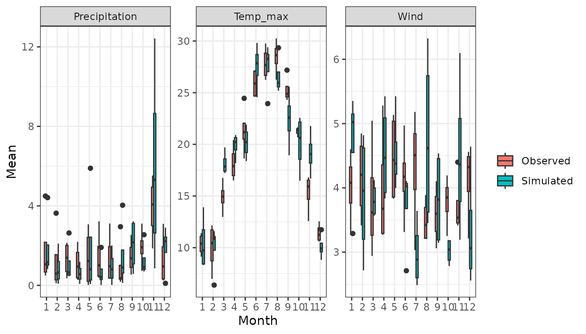

Introduction
This vignette provides a step-by-step guide on running a stochastic
weather generator using the MSTWeatherGen package. From
loading the historical weather data and spatial coordinates, performing
parameter estimation, to running simulations and generating validation
plots. This guide covers all you need to get started with
MSTWeatherGen, but does not provide the technical details
of the methods considered.
Data
Toy data
For our simulation, we will need historical weather data of multiple variables and geographic coordinates. Below, we load these datasets stored within the package.
The data considered here is the meteorological dataset SAFRAN, developed by Météo-France. We only consider a small region in the south of France for the period 2017-2021. We consider 3 variables: precipitation, wind, and maximum temperature.
Note on data needed for MSTWeatherGen
MSTWeatherGen is designed for multivariate and
spatio-temporal weather generation. Therefore, the meteorological data
to be used (here data) needs to be multiple variables (at
least two variables) defined in a spatial domain (characterized by
coordinates) and a temporal domain (defined by
dates). Thus, the data needs to be in three dimensions
(timelocationvariable).
Alongside the meteorological data, the user needs to provide a two
column matrix of coordinates of each locations considered. Each row
i of this matrix (coordinates[i,]) corresponds
to the x and y coordinates of the datum data[,i,]. Finally,
the user needs also to provide the time (dates here)
corresponding to each point in the first dimension of
data.
Another important point about the meteorological data is the
precipitation variable. Being a special variable in the estimation and
simulation (as it has many zeros), if it is considered, it has to be the
first variable in the meteorological data. If the user wants, one can
also provide the names of the variables considered (here
names).
Estimation
With the data loaded, we proceed to estimate the parameters required
for simulation. This involves determining weather types, computing
transition probabilities between weather types, estimating the
transformation functions of the variables into normal distribution, and
finally estimating the parameters of the multivariate spatio-temporal
covariance function, all using the MSTWeatherGen_Estim
function.
Before heading to the estimation, we will detail some important
considerations that will help the user use the
MSTWeatherGen_Estim function. First, if the data exhibit
seasonality, it has to be handled somehow. Here, propose to treat each
season separately meaning that the parameters of the model (weather
types, transformation functions, and covariance function) are estimated
at each season. The seasons are up to the user to define using the
following format:
seasons <- list(
s1 = list(min_day = 1, max_day = 29, min_month = 12, max_month = 2),
s2 = list(min_day = 1, max_day = 31, min_month = 3, max_month = 5),
s3 = list(min_day = 1, max_day = 31, min_month = 6, max_month = 8),
s4 = list(min_day = 1, max_day = 30, min_month = 9, max_month = 11)
)We can also provide the names of each season, to be used later for the validation plots:
names_seasons = c("DJF", "MAM", "JJA", "SON")If the considered data does not exhibit seasonality one can use the
whole period to estimate the parameters. To do that, one needs to fix
the argument by_season of the
MSTWeatherGen_Estim as False.
All the data being ready, we can now proceed to the estimation of the
parameters using MSTWeatherGen_Estim function.
names_weather_types = names
swg = MSTWeatherGen_Estim(data = data, seasons = seasons,dates = dates, names = names, by_season = T, scale = T,
precipitation = T,names_weather_types = names_weather_types,
coordinates= coordinates, max_it=100, tmax=1, n1=3, n2=3)
#> ---Final iteration--- 27
#> --Singular Value-- 2164.916 -- Local Percent -- 70.26529 %
#> ---Final iteration--- 34
#> --Singular Value-- 412.6398 -- Local Percent -- 45.76965 %
#> ---Final iteration--- 1
#> --Singular Value-- 144.612 -- Local Percent -- 56.13031 %
#>
#> -----Execution Time----- 3.192
#> Nelder-Mead direct search function minimizer
#> function value for initial parameters = 137.498584
#> Scaled convergence tolerance is 2.04889e-06
#> Stepsize computed as 0.100000
#> BUILD 3 137.534475 137.483541
#> Nelder-Mead direct search function minimizer
#> EXTENSION 5 137.498584 137.171996
#> function value for initial parameters = 840.657016
#> Scaled convergence tolerance is 1.25268e-05
#> Stepsize computed as 0.100000
#> EXTENSION 7 137.483541 136.447626
#> BUILD 3 840.765597 840.611500
#> EXTENSION 9 137.171996 115.499672
#> EXTENSION 5 840.657016 839.669532
#> REFLECTION 11 136.447626 93.498874
#> HI-REDUCTION 13 130.857143 93.498874
#> EXTENSION 7 840.611500 837.478171
#> HI-REDUCTION 15 122.896231 93.498874
#> REFLECTION 17 115.499672 66.369290
#> EXTENSION 9 839.669532 768.208721
#> HI-REDUCTION 19 102.760656 66.369290
#> REFLECTION 11 837.478171 687.893996
#> REFLECTION 21 93.498874 51.712460
#> HI-REDUCTION 13 820.319814 687.893996
#> HI-REDUCTION 23 78.741403 51.712460
#> HI-REDUCTION 15 794.432656 687.893996
#> REFLECTION 17 768.208721 659.608160
#> HI-REDUCTION 25 68.894723 51.712460
#> HI-REDUCTION 19 720.713664 659.608160
#> LO-REDUCTION 27 66.369290 51.712460
#> HI-REDUCTION 21 688.464622 659.608160
#> HI-REDUCTION 29 58.132791 51.712460
#> REFLECTION 23 687.893996 658.442180
#> HI-REDUCTION 31 54.427472 51.712460
#> HI-REDUCTION 25 659.608160 656.216700
#> LO-REDUCTION 33 52.620820 51.712460
#> LO-REDUCTION 27 658.442180 650.697402
#> HI-REDUCTION 35 51.929025 51.712460
#> HI-REDUCTION 29 656.216700 647.452817
#> HI-REDUCTION 37 51.753822 51.712460
#> LO-REDUCTION 31 650.697402 647.452817
#> HI-REDUCTION 39 51.748538 51.712460
#> HI-REDUCTION 41 51.717332 51.712460
#> HI-REDUCTION 33 648.268332 647.452817
#> HI-REDUCTION 43 51.717125 51.712460
#> HI-REDUCTION 35 647.638057 647.452817
#> LO-REDUCTION 45 51.712527 51.711557
#> HI-REDUCTION 37 647.594296 647.452817
#> LO-REDUCTION 39 647.503462 647.452817
#> EXTENSION 41 647.498230 647.379570
#> REFLECTION 47 51.712460 51.711220
#> REFLECTION 49 51.711557 51.710760
#> REFLECTION 51 51.711220 51.710160
#> REFLECTION 53 51.710760 51.710127
#> LO-REDUCTION 43 647.452817 647.379570
#> REFLECTION 55 51.710160 51.709272
#> EXTENSION 45 647.398920 647.245222
#> LO-REDUCTION 57 51.710127 51.709272
#> LO-REDUCTION 47 647.379570 647.245222
#> REFLECTION 59 51.709275 51.709221
#> EXTENSION 49 647.258055 646.983043
#> HI-REDUCTION 61 51.709272 51.708880
#> EXTENSION 63 51.709221 51.708310
#> EXTENSION 51 647.245222 646.808841
#> LO-REDUCTION 65 51.708880 51.708310
#> EXTENSION 53 646.983043 646.202286
#> EXTENSION 67 51.708559 51.707660
#> EXTENSION 55 646.808841 645.349204
#> LO-REDUCTION 69 51.708310 51.707660
#> LO-REDUCTION 57 646.202286 645.349204
#> EXTENSION 71 51.707666 51.707204
#> REFLECTION 59 645.546334 645.037507
#> LO-REDUCTION 73 51.707660 51.707197
#> EXTENSION 61 645.349204 644.038876
#> LO-REDUCTION 75 51.707293 51.707197
#> LO-REDUCTION 63 645.037507 644.038876
#> LO-REDUCTION 77 51.707204 51.707195
#> EXTENSION 65 644.423837 642.667267
#> HI-REDUCTION 79 51.707197 51.707168
#> LO-REDUCTION 67 644.038876 642.667267
#> LO-REDUCTION 81 51.707195 51.707168
#> REFLECTION 69 643.342410 642.502602
#> LO-REDUCTION 83 51.707178 51.707168
#> EXTENSION 71 642.667267 641.431723
#> LO-REDUCTION 85 51.707176 51.707168
#> LO-REDUCTION 73 642.502602 641.431723
#> HI-REDUCTION 75 641.754719 641.431723
#> REFLECTION 87 51.707173 51.707167
#> HI-REDUCTION 77 641.582267 641.431723
#> LO-REDUCTION 79 641.479050 641.367976
#> Exiting from Nelder Mead minimizer
#> 89 function evaluations used
#> Nelder-Mead direct search function minimizer
#> function value for initial parameters = 860.451448
#> Scaled convergence tolerance is 1.28217e-05
#> Stepsize computed as 0.100000
#> HI-REDUCTION 81 641.431723 641.355692
#> BUILD 3 860.574091 860.400031
#> HI-REDUCTION 83 641.367976 641.355692
#> EXTENSION 5 860.451448 859.335708
#> LO-REDUCTION 85 641.365618 641.347619
#> EXTENSION 7 860.400031 856.855458
#> HI-REDUCTION 87 641.355692 641.347483
#> EXTENSION 9 859.335708 769.995702
#> REFLECTION 11 856.855458 639.799523
#> HI-REDUCTION 89 641.347970 641.347483
#> HI-REDUCTION 13 837.058719 639.799523
#> HI-REDUCTION 91 641.347619 641.346354
#> HI-REDUCTION 15 805.232688 639.799523
#> REFLECTION 17 769.995702 439.713375
#> HI-REDUCTION 93 641.347483 641.346349
#> HI-REDUCTION 19 698.451662 439.713375
#> REFLECTION 21 639.799523 314.897684
#> HI-REDUCTION 95 641.346354 641.346181
#> HI-REDUCTION 23 534.977985 314.897684
#> HI-REDUCTION 97 641.346349 641.346115
#> HI-REDUCTION 25 460.144269 314.897684
#> REFLECTION 99 641.346181 641.346113
#> LO-REDUCTION 27 439.713375 314.897684
#> Exiting from Nelder Mead minimizer
#> 101 function evaluations used
#> HI-REDUCTION 29 362.130420 314.897684
#> HI-REDUCTION 31 327.920337 314.897684
#> HI-REDUCTION 33 319.424850 314.897684
#> HI-REDUCTION 35 316.692268 313.562565
#> LO-REDUCTION 37 314.897684 313.562565
#> HI-REDUCTION 39 313.937062 313.562565
#> REFLECTION 41 313.825898 313.556347
#> EXTENSION 43 313.562565 313.183306
#> EXTENSION 45 313.556347 312.587794
#> REFLECTION 47 313.183306 312.092917
#> REFLECTION 49 312.587794 311.578993
#> EXTENSION 51 312.092917 310.789895
#> EXTENSION 53 311.578993 308.143322
#> EXTENSION 55 310.789895 304.610766
#> REFLECTION 57 308.143322 300.940751
#> REFLECTION 59 304.610766 294.258220
#> HI-REDUCTION 61 300.940751 294.258220
#> HI-REDUCTION 63 299.755985 294.258220
#> LO-REDUCTION 65 298.019733 294.258220
#> LO-REDUCTION 67 294.757299 293.653609
#> HI-REDUCTION 69 294.258220 293.653609
#> LO-REDUCTION 71 294.095116 293.653609
#> HI-REDUCTION 73 293.856634 293.653609
#> LO-REDUCTION 75 293.822029 293.653609
#> LO-REDUCTION 77 293.675984 293.645675
#> HI-REDUCTION 79 293.653609 293.645675
#> LO-REDUCTION 81 293.646656 293.641698
#> HI-REDUCTION 83 293.645675 293.640803
#> HI-REDUCTION 85 293.641698 293.640803
#> LO-REDUCTION 87 293.641217 293.640656
#> HI-REDUCTION 89 293.640803 293.640446
#> HI-REDUCTION 91 293.640656 293.640390
#> LO-REDUCTION 93 293.640446 293.640319
#> HI-REDUCTION 95 293.640390 293.640319
#> HI-REDUCTION 97 293.640335 293.640319
#> Exiting from Nelder Mead minimizer
#> 99 function evaluations used
#> Nelder-Mead direct search function minimizer
#> function value for initial parameters = 213.419061
#> Scaled convergence tolerance is 3.18019e-06
#> Stepsize computed as 0.100000
#> BUILD 3 213.419721 213.418801
#> EXTENSION 5 213.419061 213.408211
#> Nelder-Mead direct search function minimizer
#> function value for initial parameters = 425.136428
#> Scaled convergence tolerance is 6.33503e-06
#> Stepsize computed as 0.100000
#> EXTENSION 7 213.418801 213.369446
#> BUILD 3 425.137695 425.135929
#> EXTENSION 9 213.408211 207.169607
#> REFLECTION 11 213.369446 192.847900
#> EXTENSION 5 425.136428 425.115635
#> HI-REDUCTION 13 212.621355 192.847900
#> HI-REDUCTION 15 210.410565 192.847900
#> EXTENSION 7 425.135929 425.041471
#> REFLECTION 17 207.169607 165.091077
#> HI-REDUCTION 19 199.662894 165.091077
#> EXTENSION 9 425.115635 413.686806
#> REFLECTION 21 192.847900 161.326881
#> REFLECTION 11 425.041471 389.070284
#> HI-REDUCTION 23 178.777228 161.326881
#> HI-REDUCTION 13 423.627774 389.070284
#> HI-REDUCTION 25 168.087370 161.326881
#> HI-REDUCTION 15 419.544744 389.070284
#> REFLECTION 17 413.686806 346.130926
#> HI-REDUCTION 27 165.091077 161.326881
#> HI-REDUCTION 19 400.536020 346.130926
#> HI-REDUCTION 29 162.161201 160.025942
#> LO-REDUCTION 21 389.070284 346.130926
#> HI-REDUCTION 31 161.326881 158.378052
#> HI-REDUCTION 23 371.962273 346.130926
#> HI-REDUCTION 33 160.025942 156.083170
#> LO-REDUCTION 25 347.314622 336.734166
#> LO-REDUCTION 35 158.378052 156.083170
#> REFLECTION 27 346.130926 336.039270
#> HI-REDUCTION 37 156.867674 156.083170
#> HI-REDUCTION 29 339.902562 336.039270
#> LO-REDUCTION 39 156.152221 156.083170
#> HI-REDUCTION 31 337.595389 336.039270
#> HI-REDUCTION 41 156.140924 156.083170
#> LO-REDUCTION 33 336.734166 336.039270
#> REFLECTION 43 156.089566 156.060349
#> LO-REDUCTION 35 336.372800 336.039270
#> EXTENSION 45 156.083170 156.012079
#> EXTENSION 37 336.061734 335.358419
#> REFLECTION 47 156.060349 155.993005
#> LO-REDUCTION 39 336.039270 335.358419
#> EXTENSION 49 156.012079 155.914152
#> EXTENSION 41 335.679226 334.582290
#> EXTENSION 51 155.993005 155.776237
#> EXTENSION 43 335.358419 333.283894
#> EXTENSION 53 155.914152 155.678746
#> EXTENSION 45 334.582290 332.611091
#> EXTENSION 55 155.776237 155.123677
#> REFLECTION 47 333.283894 331.402977
#> LO-REDUCTION 57 155.678746 155.123677
#> HI-REDUCTION 49 332.611091 331.402977
#> EXTENSION 59 155.238789 153.831020
#> EXTENSION 51 332.172860 330.008604
#> LO-REDUCTION 61 155.123677 153.831020
#> EXTENSION 53 331.402977 328.538211
#> EXTENSION 63 154.177748 150.578924
#> EXTENSION 55 330.008604 323.064957
#> LO-REDUCTION 65 153.831020 150.578924
#> LO-REDUCTION 57 328.538211 323.064957
#> REFLECTION 67 150.965458 147.835919
#> REFLECTION 59 323.915943 320.164568
#> EXTENSION 69 150.578924 144.108116
#> HI-REDUCTION 61 323.064957 320.164568
#> HI-REDUCTION 71 147.947694 144.108116
#> EXTENSION 63 321.261071 316.713124
#> LO-REDUCTION 73 147.835919 144.108116
#> HI-REDUCTION 65 320.164568 316.713124
#> HI-REDUCTION 67 318.774276 316.713124
#> LO-REDUCTION 69 318.133541 316.644615
#> LO-REDUCTION 75 144.975141 143.028730
#> HI-REDUCTION 77 144.108116 143.028730
#> REFLECTION 79 143.795382 143.025091
#> HI-REDUCTION 71 316.901876 316.644615
#> REFLECTION 81 143.028730 142.483810
#> HI-REDUCTION 73 316.713124 316.578176
#> LO-REDUCTION 83 143.025091 142.483810
#> HI-REDUCTION 75 316.644615 316.522705
#> HI-REDUCTION 85 142.602488 142.483810
#> LO-REDUCTION 77 316.578176 316.522705
#> REFLECTION 87 142.570906 142.467419
#> HI-REDUCTION 79 316.538961 316.522705
#> LO-REDUCTION 81 316.527713 316.515435
#> HI-REDUCTION 89 142.483810 142.354166
#> HI-REDUCTION 83 316.522705 316.513092
#> LO-REDUCTION 91 142.467419 142.352337
#> HI-REDUCTION 85 316.515435 316.513092
#> HI-REDUCTION 93 142.365810 142.352337
#> LO-REDUCTION 87 316.514531 316.512454
#> HI-REDUCTION 95 142.354166 142.346242
#> HI-REDUCTION 89 316.513092 316.512371
#> HI-REDUCTION 97 142.352337 142.343891
#> HI-REDUCTION 91 316.512454 316.512239
#> LO-REDUCTION 99 142.346242 142.343583
#> LO-REDUCTION 93 316.512371 316.512144
#> Exiting from Nelder Mead minimizer
#> 101 function evaluations used
#> Nelder-Mead direct search function minimizer
#> function value for initial parameters = 427.510241
#> Scaled convergence tolerance is 6.3704e-06
#> Stepsize computed as 0.100000
#> HI-REDUCTION 95 316.512239 316.512134
#> BUILD 3 427.511866 427.509601
#> HI-REDUCTION 97 316.512144 316.512105
#> EXTENSION 5 427.510241 427.483592
#> LO-REDUCTION 99 316.512134 316.512104
#> Exiting from Nelder Mead minimizer
#> 101 function evaluations used
#> EXTENSION 7 427.509601 427.388706
#> EXTENSION 9 427.483592 413.060852
#> REFLECTION 11 427.388706 379.516434
#> HI-REDUCTION 13 425.595563 379.516434
#> HI-REDUCTION 15 420.456575 379.516434
#> REFLECTION 17 413.060852 294.817564
#> HI-REDUCTION 19 395.813571 294.817564
#> REFLECTION 21 379.516434 185.922950
#> HI-REDUCTION 23 341.770801 185.922950
#> REFLECTION 25 294.817564 165.006554
#> HI-REDUCTION 27 224.290504 165.006554
#> HI-REDUCTION 29 185.922950 165.006554
#> HI-REDUCTION 31 174.202753 149.086923
#> HI-REDUCTION 33 165.006554 136.047271
#> HI-REDUCTION 35 149.086923 99.759277
#> REFLECTION 37 136.047271 95.152639
#> HI-REDUCTION 39 112.840523 95.152639
#> LO-REDUCTION 41 99.759277 95.152639
#> HI-REDUCTION 43 96.195091 95.152639
#> HI-REDUCTION 45 95.955617 95.152639
#> HI-REDUCTION 47 95.343843 95.152639
#> HI-REDUCTION 49 95.304574 95.152639
#> HI-REDUCTION 51 95.222873 95.152639
#> EXTENSION 53 95.202457 95.121638
#> EXTENSION 55 95.152639 94.944563
#> LO-REDUCTION 57 95.121638 94.944563
#> EXTENSION 59 94.950122 94.573572
#> LO-REDUCTION 61 94.944563 94.573572
#> EXTENSION 63 94.749637 94.138178
#> EXTENSION 65 94.573572 93.460279
#> EXTENSION 67 94.138178 92.489433
#> EXTENSION 69 93.460279 90.287365
#> REFLECTION 71 92.489433 90.184225
#> EXTENSION 73 90.287365 87.902418
#> HI-REDUCTION 75 90.184225 87.902418
#> REFLECTION 77 89.005005 86.351739
#> HI-REDUCTION 79 87.902418 86.351739
#> EXTENSION 81 87.481313 85.883081
#> EXTENSION 83 86.351739 81.766968
#> LO-REDUCTION 85 85.883081 81.766968
#> EXTENSION 87 82.867564 72.857330
#> LO-REDUCTION 89 81.766968 72.857330
#> EXTENSION 91 77.161629 67.343542
#> EXTENSION 93 72.857330 40.083954
#> HI-REDUCTION 95 67.343542 40.083954
#> LO-REDUCTION 97 62.528589 40.083954
#> HI-REDUCTION 99 52.846703 40.083954
#> Exiting from Nelder Mead minimizer
#> 101 function evaluations used
#> Nelder-Mead direct search function minimizer
#> function value for initial parameters = 46.631207
#> Scaled convergence tolerance is 6.94859e-07
#> Stepsize computed as 0.100000
#> BUILD 3 46.645372 46.625273
#> Nelder-Mead direct search function minimizer
#> EXTENSION 5 46.631207 46.502510
#> function value for initial parameters = 1096.493892
#> Scaled convergence tolerance is 1.6339e-05
#> Stepsize computed as 0.100000
#> EXTENSION 7 46.625273 46.218823
#> BUILD 3 1096.573608 1096.460483
#> EXTENSION 9 46.502510 39.729807
#> EXTENSION 5 1096.493892 1095.767646
#> REFLECTION 11 46.218823 34.967793
#> HI-REDUCTION 13 44.140403 34.967793
#> EXTENSION 7 1096.460483 1094.153847
#> HI-REDUCTION 15 41.615457 34.967793
#> REFLECTION 17 39.729807 27.403846
#> HI-REDUCTION 19 36.985611 27.403846
#> EXTENSION 9 1095.767646 1045.671975
#> REFLECTION 21 34.967793 22.975036
#> REFLECTION 11 1094.153847 969.522338
#> HI-REDUCTION 23 31.054299 22.975036
#> HI-REDUCTION 13 1081.632245 969.522338
#> HI-REDUCTION 25 28.186290 22.975036
#> HI-REDUCTION 15 1063.560030 969.522338
#> REFLECTION 17 1045.671975 765.598243
#> REFLECTION 27 27.403846 22.757093
#> HI-REDUCTION 19 1007.425167 765.598243
#> REFLECTION 21 969.522338 508.208974
#> HI-REDUCTION 29 24.699577 22.757093
#> HI-REDUCTION 23 878.099526 508.208974
#> HI-REDUCTION 31 23.523696 22.757093
#> LO-REDUCTION 25 765.598243 441.382482
#> LO-REDUCTION 33 22.975036 22.757093
#> HI-REDUCTION 27 645.991797 441.382482
#> HI-REDUCTION 35 22.820106 22.757093
#> REFLECTION 29 508.208974 312.822656
#> HI-REDUCTION 37 22.797051 22.757093
#> LO-REDUCTION 31 441.382482 312.822656
#> HI-REDUCTION 39 22.771845 22.757093
#> HI-REDUCTION 33 361.630160 312.822656
#> REFLECTION 41 22.765686 22.752987
#> HI-REDUCTION 35 329.213712 312.822656
#> EXTENSION 43 22.757093 22.740316
#> HI-REDUCTION 37 318.089214 312.822656
#> EXTENSION 45 22.752987 22.709342
#> LO-REDUCTION 39 313.211566 312.822656
#> EXTENSION 47 22.740316 22.695067
#> HI-REDUCTION 41 312.877038 312.701704
#> EXTENSION 49 22.709342 22.552875
#> HI-REDUCTION 43 312.822656 312.701704
#> EXTENSION 51 22.695067 22.491051
#> EXTENSION 53 22.552875 21.919727
#> EXTENSION 45 312.712612 312.338697
#> REFLECTION 55 22.491051 21.523426
#> LO-REDUCTION 47 312.701704 312.338697
#> HI-REDUCTION 57 21.999924 21.523426
#> EXTENSION 49 312.555592 311.866580
#> EXTENSION 51 312.338697 311.373560
#> EXTENSION 53 311.866580 310.152330
#> HI-REDUCTION 59 21.919727 21.523426
#> HI-REDUCTION 61 21.772952 21.523426
#> LO-REDUCTION 63 21.740839 21.523426
#> HI-REDUCTION 65 21.626254 21.523426
#> LO-REDUCTION 55 311.373560 310.152330
#> LO-REDUCTION 67 21.606237 21.523426
#> REFLECTION 57 310.493451 310.139355
#> LO-REDUCTION 69 21.543938 21.523426
#> REFLECTION 59 310.152330 309.610518
#> REFLECTION 71 21.523539 21.522674
#> HI-REDUCTION 61 310.139355 309.610518
#> HI-REDUCTION 73 21.523426 21.518295
#> REFLECTION 63 309.820949 309.499216
#> HI-REDUCTION 75 21.522674 21.517836
#> EXTENSION 65 309.610518 309.038566
#> HI-REDUCTION 77 21.518305 21.517836
#> LO-REDUCTION 67 309.499216 309.038566
#> REFLECTION 69 309.039325 308.747245
#> HI-REDUCTION 79 21.518295 21.517505
#> HI-REDUCTION 71 309.038566 308.747245
#> LO-REDUCTION 81 21.517836 21.517505
#> REFLECTION 73 308.852228 308.675922
#> HI-REDUCTION 83 21.517617 21.517483
#> LO-REDUCTION 75 308.747245 308.675922
#> HI-REDUCTION 85 21.517505 21.517415
#> HI-REDUCTION 77 308.679169 308.675922
#> HI-REDUCTION 87 21.517483 21.517358
#> HI-REDUCTION 79 308.678839 308.661988
#> LO-REDUCTION 89 21.517415 21.517358
#> HI-REDUCTION 81 308.675922 308.658783
#> HI-REDUCTION 83 308.661988 308.658783
#> HI-REDUCTION 91 21.517369 21.517358
#> LO-REDUCTION 85 308.659056 308.656874
#> HI-REDUCTION 93 21.517367 21.517358
#> HI-REDUCTION 87 308.658783 308.656781
#> LO-REDUCTION 95 21.517360 21.517356
#> HI-REDUCTION 89 308.656874 308.656543
#> HI-REDUCTION 91 308.656781 308.656471
#> HI-REDUCTION 97 21.517358 21.517356
#> LO-REDUCTION 93 308.656543 308.656390
#> Exiting from Nelder Mead minimizer
#> 99 function evaluations used
#> Nelder-Mead direct search function minimizer
#> HI-REDUCTION 95 308.656471 308.656357
#> function value for initial parameters = 1099.492608
#> Scaled convergence tolerance is 1.63837e-05
#> Stepsize computed as 0.100000
#> HI-REDUCTION 97 308.656390 308.656312
#> BUILD 3 1099.571853 1099.459397
#> LO-REDUCTION 99 308.656357 308.656312
#> EXTENSION 5 1099.492608 1098.770699
#> Exiting from Nelder Mead minimizer
#> 101 function evaluations used
#> EXTENSION 7 1099.459397 1097.166815
#> EXTENSION 9 1098.770699 1048.846776
#> REFLECTION 11 1097.166815 970.644924
#> HI-REDUCTION 13 1084.732656 970.644924
#> HI-REDUCTION 15 1066.775173 970.644924
#> REFLECTION 17 1048.846776 753.358960
#> HI-REDUCTION 19 1009.862676 753.358960
#> REFLECTION 21 970.644924 464.536813
#> HI-REDUCTION 23 874.315948 464.536813
#> REFLECTION 25 753.358960 193.962649
#> HI-REDUCTION 27 568.926137 193.962649
#> HI-REDUCTION 29 464.536813 193.962649
#> LO-REDUCTION 31 431.967364 139.145274
#> HI-REDUCTION 33 258.994079 139.145274
#> HI-REDUCTION 35 193.962649 139.145274
#> HI-REDUCTION 37 171.829307 136.605495
#> HI-REDUCTION 39 148.505167 136.605495
#> LO-REDUCTION 41 139.145274 136.605495
#> HI-REDUCTION 43 136.958601 136.033035
#> LO-REDUCTION 45 136.605495 136.033035
#> HI-REDUCTION 47 136.090329 135.957224
#> EXTENSION 49 136.033035 135.644074
#> HI-REDUCTION 51 135.957224 135.644074
#> EXTENSION 53 135.801207 135.314801
#> EXTENSION 55 135.644074 134.682124
#> EXTENSION 57 135.314801 133.988996
#> EXTENSION 59 134.682124 131.726796
#> EXTENSION 61 133.988996 130.828691
#> EXTENSION 63 131.726796 123.757184
#> LO-REDUCTION 65 130.828691 123.757184
#> EXTENSION 67 127.048598 118.579100
#> EXTENSION 69 123.757184 106.239129
#> HI-REDUCTION 71 118.579100 106.239129
#> EXTENSION 73 115.702463 96.431815
#> EXTENSION 75 106.239129 80.638999
#> REFLECTION 77 96.431815 61.244741
#> HI-REDUCTION 79 80.638999 61.244741
#> HI-REDUCTION 81 76.569271 61.244741
#> REFLECTION 83 66.423707 54.181773
#> HI-REDUCTION 85 61.244741 54.181773
#> LO-REDUCTION 87 58.562918 54.181773
#> HI-REDUCTION 89 55.238706 54.181773
#> HI-REDUCTION 91 55.021776 54.163731
#> HI-REDUCTION 93 54.181773 53.945793
#> HI-REDUCTION 95 54.163731 53.589908
#> LO-REDUCTION 97 53.945793 53.589908
#> HI-REDUCTION 99 53.685816 53.589908
#> Exiting from Nelder Mead minimizer
#> 101 function evaluations used
#> Nelder-Mead direct search function minimizer
#> function value for initial parameters = 383.999731
#> Scaled convergence tolerance is 5.72204e-06
#> Stepsize computed as 0.100000
#> BUILD 3 384.000712 383.999344
#> Nelder-Mead direct search function minimizer
#> EXTENSION 5 383.999731 383.983476
#> function value for initial parameters = 423.937267
#> Scaled convergence tolerance is 6.31716e-06
#> Stepsize computed as 0.100000
#> EXTENSION 7 383.999344 383.924577
#> BUILD 3 423.938785 423.936668
#> EXTENSION 9 383.983476 372.254659
#> REFLECTION 11 383.924577 343.629720
#> EXTENSION 5 423.937267 423.912260
#> HI-REDUCTION 13 382.693419 343.629720
#> HI-REDUCTION 15 378.640632 343.629720
#> EXTENSION 7 423.936668 423.822580
#> REFLECTION 17 372.254659 290.982920
#> HI-REDUCTION 19 357.147357 290.982920
#> EXTENSION 9 423.912260 409.063029
#> REFLECTION 21 343.629720 275.985937
#> REFLECTION 11 423.822580 376.208053
#> HI-REDUCTION 23 316.691674 275.985937
#> HI-REDUCTION 13 422.061224 376.208053
#> HI-REDUCTION 15 416.781227 376.208053
#> HI-REDUCTION 25 296.620264 275.985937
#> REFLECTION 17 409.063029 316.283054
#> HI-REDUCTION 19 391.593954 316.283054
#> LO-REDUCTION 27 290.982920 270.968389
#> REFLECTION 21 376.208053 290.798695
#> HI-REDUCTION 23 345.693706 290.798695
#> HI-REDUCTION 29 275.985937 270.968389
#> HI-REDUCTION 25 322.716085 290.798695
#> HI-REDUCTION 31 275.885956 270.968389
#> LO-REDUCTION 27 316.283054 288.621130
#> HI-REDUCTION 33 271.781669 270.968389
#> HI-REDUCTION 29 297.774083 288.621130
#> HI-REDUCTION 35 271.009290 270.813489
#> HI-REDUCTION 31 290.798695 288.621130
#> REFLECTION 37 270.968389 270.592428
#> HI-REDUCTION 33 290.748609 288.621130
#> HI-REDUCTION 39 270.813489 270.592428
#> HI-REDUCTION 35 289.203906 288.621130
#> REFLECTION 41 270.660881 270.537415
#> HI-REDUCTION 37 288.770396 288.621130
#> EXTENSION 43 270.592428 270.292748
#> HI-REDUCTION 39 288.699943 288.621130
#> EXTENSION 45 270.537415 270.200856
#> HI-REDUCTION 41 288.656211 288.621130
#> EXTENSION 47 270.292748 269.336987
#> EXTENSION 43 288.627409 288.588773
#> REFLECTION 49 270.200856 269.320144
#> EXTENSION 45 288.621130 288.507850
#> EXTENSION 51 269.336987 267.545440
#> REFLECTION 47 288.588773 288.501476
#> EXTENSION 53 269.320144 265.509125
#> EXTENSION 49 288.507850 288.337506
#> REFLECTION 55 267.545440 264.297508
#> EXTENSION 57 265.509125 257.161029
#> EXTENSION 51 288.501476 288.209639
#> HI-REDUCTION 59 264.297508 257.161029
#> EXTENSION 53 288.337506 287.893655
#> REFLECTION 61 262.720664 256.177681
#> EXTENSION 55 288.209639 287.198463
#> LO-REDUCTION 63 257.161029 254.778401
#> LO-REDUCTION 57 287.893655 287.198463
#> LO-REDUCTION 65 256.177681 254.659312
#> EXTENSION 59 287.304095 286.192793
#> HI-REDUCTION 67 254.815894 254.659312
#> LO-REDUCTION 61 287.198463 286.192793
#> LO-REDUCTION 69 254.778401 254.256714
#> LO-REDUCTION 63 286.630497 286.148722
#> HI-REDUCTION 71 254.659312 254.226884
#> LO-REDUCTION 65 286.192793 286.115734
#> HI-REDUCTION 73 254.256714 254.163447
#> HI-REDUCTION 67 286.148722 286.115734
#> HI-REDUCTION 69 286.124138 286.111768
#> HI-REDUCTION 71 286.115734 286.104977
#> HI-REDUCTION 73 286.111768 286.100783
#> LO-REDUCTION 75 254.226884 254.160176
#> HI-REDUCTION 77 254.163447 254.139723
#> HI-REDUCTION 79 254.160176 254.139723
#> REFLECTION 81 254.140200 254.125052
#> HI-REDUCTION 83 254.139723 254.125052
#> LO-REDUCTION 75 286.104977 286.100783
#> REFLECTION 85 254.127462 254.119511
#> HI-REDUCTION 77 286.101175 286.100783
#> LO-REDUCTION 87 254.125052 254.119511
#> HI-REDUCTION 79 286.101073 286.100450
#> LO-REDUCTION 89 254.120082 254.119511
#> HI-REDUCTION 81 286.100783 286.100328
#> HI-REDUCTION 83 286.100450 286.100309
#> HI-REDUCTION 91 254.119573 254.118605
#> REFLECTION 85 286.100328 286.100307
#> LO-REDUCTION 93 254.119511 254.118605
#> HI-REDUCTION 87 286.100309 286.100232
#> LO-REDUCTION 95 254.118802 254.118605
#> HI-REDUCTION 89 286.100307 286.100232
#> HI-REDUCTION 97 254.118784 254.118605
#> LO-REDUCTION 91 286.100245 286.100232
#> HI-REDUCTION 93 286.100243 286.100231
#> HI-REDUCTION 99 254.118639 254.118605
#> Exiting from Nelder Mead minimizer
#> 101 function evaluations used
#> Exiting from Nelder Mead minimizer
#> 95 function evaluations used
#> Nelder-Mead direct search function minimizer
#> function value for initial parameters = 426.280841
#> Scaled convergence tolerance is 6.35208e-06
#> Stepsize computed as 0.100000
#> BUILD 3 426.282501 426.280186
#> EXTENSION 5 426.280841 426.253491
#> EXTENSION 7 426.280186 426.155319
#> EXTENSION 9 426.253491 409.599438
#> REFLECTION 11 426.155319 370.404244
#> HI-REDUCTION 13 424.215322 370.404244
#> HI-REDUCTION 15 418.330809 370.404244
#> REFLECTION 17 409.599438 279.189862
#> HI-REDUCTION 19 389.256216 279.189862
#> REFLECTION 21 370.404244 168.058726
#> HI-REDUCTION 23 328.668480 168.058726
#> LO-REDUCTION 25 279.189862 139.710938
#> HI-REDUCTION 27 227.127803 139.710938
#> REFLECTION 29 168.058726 85.103598
#> LO-REDUCTION 31 139.710938 84.993472
#> HI-REDUCTION 33 105.965418 84.993472
#> HI-REDUCTION 35 92.200773 84.993472
#> HI-REDUCTION 37 87.414547 84.993472
#> LO-REDUCTION 39 85.103598 84.993472
#> EXTENSION 41 85.088436 84.404169
#> LO-REDUCTION 43 84.993472 84.404169
#> EXTENSION 45 84.577602 83.866326
#> HI-REDUCTION 47 84.404169 83.866326
#> EXTENSION 49 84.182098 82.880171
#> LO-REDUCTION 51 83.866326 82.880171
#> EXTENSION 53 83.098773 80.003833
#> LO-REDUCTION 55 82.880171 80.003833
#> EXTENSION 57 80.315995 71.247977
#> REFLECTION 59 80.003833 69.311849
#> HI-REDUCTION 61 75.383585 69.311849
#> LO-REDUCTION 63 71.247977 69.311849
#> EXTENSION 65 69.503598 67.017527
#> REFLECTION 67 69.311849 66.769648
#> HI-REDUCTION 69 67.268090 66.769648
#> HI-REDUCTION 71 67.017527 66.559414
#> HI-REDUCTION 73 66.769648 66.293095
#> HI-REDUCTION 75 66.559414 66.293095
#> REFLECTION 77 66.375654 66.162607
#> HI-REDUCTION 79 66.293095 66.162607
#> HI-REDUCTION 81 66.222423 66.162607
#> LO-REDUCTION 83 66.196028 66.157456
#> HI-REDUCTION 85 66.162607 66.157456
#> HI-REDUCTION 87 66.161721 66.153786
#> HI-REDUCTION 89 66.157456 66.153786
#> LO-REDUCTION 91 66.155858 66.153786
#> HI-REDUCTION 93 66.154644 66.153786
#> REFLECTION 95 66.154148 66.153779
#> HI-REDUCTION 97 66.153786 66.153587
#> HI-REDUCTION 99 66.153779 66.153559
#> Exiting from Nelder Mead minimizer
#> 101 function evaluations used
#> Nelder-Mead direct search function minimizer
#> function value for initial parameters = 180.769919
#> Scaled convergence tolerance is 2.69368e-06
#> Stepsize computed as 0.100000
#> BUILD 3 180.770619 180.769644
#> Nelder-Mead direct search function minimizer
#> EXTENSION 5 180.769919 180.758506
#> function value for initial parameters = 341.713416
#> Scaled convergence tolerance is 5.09193e-06
#> Stepsize computed as 0.100000
#> EXTENSION 7 180.769644 180.718235
#> BUILD 3 341.714679 341.712917
#> EXTENSION 9 180.758506 175.981090
#> REFLECTION 11 180.718235 165.475431
#> EXTENSION 5 341.713416 341.692786
#> HI-REDUCTION 13 180.006967 165.475431
#> HI-REDUCTION 15 178.228744 165.475431
#> EXTENSION 7 341.712917 341.620025
#> REFLECTION 17 175.981090 137.046199
#> HI-REDUCTION 19 170.786557 137.046199
#> EXTENSION 9 341.692786 333.309443
#> REFLECTION 21 165.475431 108.244494
#> REFLECTION 11 341.620025 315.541630
#> HI-REDUCTION 23 152.509361 108.244494
#> HI-REDUCTION 13 340.341751 315.541630
#> HI-REDUCTION 15 337.199724 315.541630
#> HI-REDUCTION 25 140.736860 108.244494
#> REFLECTION 17 333.309443 270.312748
#> HI-REDUCTION 19 324.471648 270.312748
#> REFLECTION 27 137.046199 104.685421
#> REFLECTION 21 315.541630 237.997195
#> HI-REDUCTION 23 294.193091 237.997195
#> HI-REDUCTION 29 121.973812 104.685421
#> HI-REDUCTION 25 275.845411 237.997195
#> HI-REDUCTION 31 113.476180 104.685421
#> LO-REDUCTION 27 270.312748 237.997195
#> LO-REDUCTION 33 108.244494 104.327043
#> HI-REDUCTION 29 253.146636 237.997195
#> LO-REDUCTION 35 104.702624 104.327043
#> HI-REDUCTION 31 244.861814 237.997195
#> HI-REDUCTION 37 104.685421 104.312754
#> LO-REDUCTION 33 240.480933 237.902924
#> LO-REDUCTION 39 104.327043 104.312754
#> HI-REDUCTION 35 238.715920 237.902924
#> HI-REDUCTION 41 104.315335 104.285212
#> LO-REDUCTION 37 238.007454 237.902924
#> HI-REDUCTION 43 104.312754 104.285212
#> HI-REDUCTION 39 237.997195 237.902924
#> EXTENSION 45 104.296229 104.244535
#> HI-REDUCTION 41 237.921553 237.902924
#> LO-REDUCTION 47 104.285212 104.244535
#> HI-REDUCTION 43 237.918028 237.902924
#> EXTENSION 49 104.268208 104.217941
#> REFLECTION 45 237.907444 237.900372
#> EXTENSION 51 104.244535 104.150426
#> LO-REDUCTION 53 104.217941 104.150426
#> EXTENSION 47 237.902924 237.883098
#> EXTENSION 55 104.156611 104.044248
#> LO-REDUCTION 49 237.900372 237.883098
#> EXTENSION 57 104.150426 104.005587
#> EXTENSION 51 237.884645 237.850177
#> EXTENSION 59 104.044248 103.853214
#> LO-REDUCTION 53 237.883098 237.850177
#> EXTENSION 61 104.005587 103.818089
#> EXTENSION 55 237.868627 237.822124
#> REFLECTION 63 103.853214 103.718224
#> EXTENSION 57 237.850177 237.763015
#> LO-REDUCTION 65 103.818089 103.718224
#> EXTENSION 59 237.822124 237.717689
#> REFLECTION 67 103.732056 103.701568
#> REFLECTION 61 237.763015 237.664935
#> HI-REDUCTION 69 103.718224 103.701125
#> LO-REDUCTION 63 237.717689 237.664935
#> EXTENSION 71 103.701568 103.670627
#> LO-REDUCTION 65 237.681052 237.663537
#> LO-REDUCTION 73 103.701125 103.670627
#> REFLECTION 67 237.664935 237.652331
#> REFLECTION 75 103.673999 103.668980
#> LO-REDUCTION 69 237.663537 237.652331
#> REFLECTION 71 237.655303 237.652317
#> HI-REDUCTION 73 237.652331 237.651074
#> HI-REDUCTION 77 103.670627 103.663544
#> EXTENSION 79 103.668980 103.652451
#> LO-REDUCTION 81 103.663544 103.652451
#> LO-REDUCTION 75 237.652317 237.650615
#> EXTENSION 83 103.656109 103.647170
#> HI-REDUCTION 77 237.651074 237.650615
#> HI-REDUCTION 85 103.652451 103.647170
#> HI-REDUCTION 79 237.650797 237.650441
#> REFLECTION 87 103.650016 103.645324
#> LO-REDUCTION 81 237.650615 237.650407
#> HI-REDUCTION 83 237.650441 237.650407
#> LO-REDUCTION 89 103.647170 103.645324
#> HI-REDUCTION 85 237.650429 237.650397
#> REFLECTION 91 103.646599 103.645239
#> HI-REDUCTION 87 237.650407 237.650397
#> HI-REDUCTION 93 103.645451 103.645239
#> Exiting from Nelder Mead minimizer
#> 89 function evaluations used
#> HI-REDUCTION 95 103.645324 103.645195
#> HI-REDUCTION 97 103.645239 103.645154
#> HI-REDUCTION 99 103.645195 103.645150
#> Exiting from Nelder Mead minimizer
#> 101 function evaluations used
#> Nelder-Mead direct search function minimizer
#> function value for initial parameters = 337.754619
#> Scaled convergence tolerance is 5.03294e-06
#> Stepsize computed as 0.100000
#> BUILD 3 337.755973 337.754085
#> EXTENSION 5 337.754619 337.732507
#> EXTENSION 7 337.754085 337.654517
#> EXTENSION 9 337.732507 328.639764
#> REFLECTION 11 337.654517 307.803119
#> HI-REDUCTION 13 336.283258 307.803119
#> HI-REDUCTION 15 332.896977 307.803119
#> REFLECTION 17 328.639764 243.669539
#> HI-REDUCTION 19 318.562585 243.669539
#> REFLECTION 21 307.803119 160.121022
#> HI-REDUCTION 23 279.748867 160.121022
#> REFLECTION 25 243.669539 155.180337
#> HI-REDUCTION 27 189.627929 155.180337
#> HI-REDUCTION 29 160.121022 151.238552
#> HI-REDUCTION 31 155.180337 131.990025
#> HI-REDUCTION 33 151.238552 99.963941
#> REFLECTION 35 131.990025 93.447306
#> HI-REDUCTION 37 110.401817 93.447306
#> LO-REDUCTION 39 99.963941 93.447306
#> HI-REDUCTION 41 94.299893 93.447306
#> HI-REDUCTION 43 93.870847 93.128039
#> LO-REDUCTION 45 93.447306 93.123268
#> HI-REDUCTION 47 93.128039 93.123268
#> HI-REDUCTION 49 93.125431 93.096102
#> HI-REDUCTION 51 93.123268 93.090132
#> REFLECTION 53 93.096102 93.084487
#> HI-REDUCTION 55 93.090132 93.084487
#> EXTENSION 57 93.084641 93.064113
#> LO-REDUCTION 59 93.084487 93.064113
#> EXTENSION 61 93.073588 93.035624
#> LO-REDUCTION 63 93.064113 93.035624
#> EXTENSION 65 93.035816 92.982524
#> EXTENSION 67 93.035624 92.947735
#> EXTENSION 69 92.982524 92.844019
#> EXTENSION 71 92.947735 92.692456
#> EXTENSION 73 92.844019 92.602067
#> REFLECTION 75 92.692456 92.427239
#> HI-REDUCTION 77 92.602067 92.427239
#> EXTENSION 79 92.555021 92.336252
#> EXTENSION 81 92.427239 91.954369
#> EXTENSION 83 92.336252 91.941585
#> EXTENSION 85 91.954369 91.004145
#> LO-REDUCTION 87 91.941585 91.004145
#> HI-REDUCTION 89 91.417975 91.004145
#> REFLECTION 91 91.179313 90.937919
#> HI-REDUCTION 93 91.004145 90.877933
#> EXTENSION 95 90.937919 90.670647
#> HI-REDUCTION 97 90.877933 90.670647
#> LO-REDUCTION 99 90.749533 90.659627
#> Exiting from Nelder Mead minimizer
#> 101 function evaluations used
#> ---Final iteration--- 14
#> --Singular Value-- 3707.34 -- Local Percent -- 88.08402 %
#> ---Final iteration--- 195
#> --Singular Value-- 340.7072 -- Local Percent -- 31.63652 %
#> ---Final iteration--- 2
#> --Singular Value-- 134.1718 -- Local Percent -- 54.84311 %
#>
#> -----Execution Time----- 4.064
#> Nelder-Mead direct search function minimizer
#> function value for initial parameters = 147.684668
#> Scaled convergence tolerance is 2.20067e-06
#> Stepsize computed as 0.100000
#> BUILD 3 147.684683 147.684662
#> EXTENSION 5 147.684668 147.684051
#> Nelder-Mead direct search function minimizer
#> EXTENSION 7 147.684662 147.679963
#> function value for initial parameters = 655.833121
#> Scaled convergence tolerance is 9.77268e-06
#> Stepsize computed as 0.100000
#> EXTENSION 9 147.684051 143.123391
#> BUILD 3 655.833159 655.833106
#> REFLECTION 11 147.679963 128.652576
#> HI-REDUCTION 13 147.428549 128.652576
#> EXTENSION 5 655.833121 655.831546
#> HI-REDUCTION 15 145.995552 128.652576
#> REFLECTION 17 143.123391 99.839442
#> EXTENSION 7 655.833106 655.820960
#> HI-REDUCTION 19 135.600845 99.839442
#> REFLECTION 21 128.652576 73.486905
#> EXTENSION 9 655.831546 642.182090
#> HI-REDUCTION 23 114.461894 73.486905
#> REFLECTION 11 655.820960 590.566041
#> HI-REDUCTION 13 655.139916 590.566041
#> HI-REDUCTION 15 651.025750 590.566041
#> REFLECTION 17 642.182090 466.193829
#> HI-REDUCTION 19 616.626180 466.193829
#> REFLECTION 21 590.566041 356.022915
#> HI-REDUCTION 25 103.231756 73.486905
#> REFLECTION 27 99.839442 68.384822
#> HI-REDUCTION 29 86.444875 68.384822
#> REFLECTION 31 73.486905 68.222775
#> HI-REDUCTION 23 531.626253 356.022915
#> HI-REDUCTION 33 68.384822 67.943579
#> HI-REDUCTION 35 68.222775 65.767690
#> HI-REDUCTION 25 481.593042 356.022915
#> HI-REDUCTION 37 67.943579 64.111178
#> REFLECTION 27 466.193829 344.907943
#> HI-REDUCTION 29 406.124505 344.907943
#> LO-REDUCTION 39 65.767690 64.075387
#> HI-REDUCTION 31 374.196850 344.907943
#> HI-REDUCTION 41 64.607203 64.075387
#> LO-REDUCTION 33 356.022915 344.828009
#> LO-REDUCTION 43 64.169347 64.075387
#> HI-REDUCTION 35 348.417545 344.828009
#> HI-REDUCTION 45 64.111178 64.075387
#> LO-REDUCTION 37 345.199274 344.828009
#> HI-REDUCTION 39 344.907943 344.720942
#> HI-REDUCTION 47 64.095307 64.075387
#> HI-REDUCTION 41 344.828009 344.680083
#> HI-REDUCTION 49 64.087542 64.075387
#> EXTENSION 43 344.720942 344.404352
#> LO-REDUCTION 51 64.083914 64.075387
#> HI-REDUCTION 45 344.680083 344.404352
#> EXTENSION 53 64.078315 64.061718
#> EXTENSION 47 344.573347 344.069666
#> LO-REDUCTION 55 64.075387 64.061718
#> EXTENSION 57 64.064972 64.042197
#> EXTENSION 49 344.404352 343.594450
#> EXTENSION 59 64.061718 64.020384
#> EXTENSION 51 344.069666 342.436800
#> EXTENSION 61 64.042197 63.985634
#> EXTENSION 53 343.594450 341.791086
#> REFLECTION 55 342.436800 340.341945
#> HI-REDUCTION 57 341.791086 340.341945
#> EXTENSION 59 341.417021 339.539556
#> EXTENSION 63 64.020384 63.905238
#> REFLECTION 65 63.985634 63.904632
#> EXTENSION 67 63.905238 63.731492
#> LO-REDUCTION 69 63.904632 63.731492
#> EXTENSION 71 63.804049 63.624129
#> EXTENSION 61 340.341945 336.749182
#> EXTENSION 73 63.731492 63.467189
#> EXTENSION 63 339.539556 334.273810
#> HI-REDUCTION 75 63.624129 63.467189
#> HI-REDUCTION 65 336.934635 334.273810
#> EXTENSION 77 63.570208 63.199069
#> REFLECTION 67 336.749182 332.577159
#> LO-REDUCTION 79 63.467189 63.199069
#> LO-REDUCTION 69 334.273810 331.102786
#> EXTENSION 81 63.235079 62.881546
#> HI-REDUCTION 71 332.577159 331.102786
#> LO-REDUCTION 83 63.199069 62.881546
#> HI-REDUCTION 73 332.021222 331.006826
#> LO-REDUCTION 85 63.058875 62.881546
#> EXTENSION 75 331.102786 328.871211
#> EXTENSION 87 62.945117 62.580986
#> HI-REDUCTION 77 331.006826 328.871211
#> EXTENSION 89 62.881546 62.391349
#> EXTENSION 79 330.023688 326.980079
#> EXTENSION 91 62.580986 61.948540
#> LO-REDUCTION 81 328.871211 326.966325
#> HI-REDUCTION 83 327.596360 326.966325
#> HI-REDUCTION 93 62.391349 61.948540
#> HI-REDUCTION 85 327.066437 326.966325
#> EXTENSION 95 62.225006 61.322878
#> HI-REDUCTION 97 61.948540 61.322878
#> LO-REDUCTION 87 326.980079 326.695516
#> REFLECTION 99 61.754877 61.293053
#> HI-REDUCTION 89 326.966325 326.695516
#> Exiting from Nelder Mead minimizer
#> 101 function evaluations used
#> Nelder-Mead direct search function minimizer
#> function value for initial parameters = 659.191283
#> Scaled convergence tolerance is 9.82272e-06
#> Stepsize computed as 0.100000
#> HI-REDUCTION 91 326.720381 326.695516
#> REFLECTION 93 326.707038 326.656343
#> HI-REDUCTION 95 326.695516 326.656343
#> HI-REDUCTION 97 326.660234 326.648414
#> BUILD 3 659.191323 659.191267
#> EXTENSION 5 659.191283 659.189632
#> REFLECTION 99 326.656343 326.634310
#> EXTENSION 7 659.191267 659.178474
#> Exiting from Nelder Mead minimizer
#> 101 function evaluations used
#> EXTENSION 9 659.189632 643.886601
#> REFLECTION 11 659.178474 582.624209
#> HI-REDUCTION 13 658.445581 582.624209
#> HI-REDUCTION 15 653.905174 582.624209
#> REFLECTION 17 643.886601 418.619753
#> HI-REDUCTION 19 614.025494 418.619753
#> REFLECTION 21 582.624209 210.423211
#> HI-REDUCTION 23 508.216532 210.423211
#> REFLECTION 25 418.619753 -58.521196
#> HI-REDUCTION 27 285.521943 -58.521196
#> HI-REDUCTION 29 210.423211 -58.521196
#> LO-REDUCTION 31 187.437609 -58.521196
#> HI-REDUCTION 33 59.867659 -58.521196
#> HI-REDUCTION 35 -12.076216 -58.521196
#> HI-REDUCTION 37 -44.303631 -58.521196
#> LO-REDUCTION 39 -48.074912 -65.376528
#> HI-REDUCTION 41 -58.521196 -65.376528
#> HI-REDUCTION 43 -63.890599 -65.376528
#> HI-REDUCTION 45 -65.021383 -66.226563
#> LO-REDUCTION 47 -65.376528 -66.340990
#> HI-REDUCTION 49 -66.193304 -66.340990
#> HI-REDUCTION 51 -66.226563 -66.340990
#> LO-REDUCTION 53 -66.320157 -66.340990
#> HI-REDUCTION 55 -66.329110 -66.340990
#> REFLECTION 57 -66.337767 -66.349637
#> HI-REDUCTION 59 -66.340990 -66.349637
#> EXTENSION 61 -66.348240 -66.359888
#> EXTENSION 63 -66.349637 -66.376583
#> EXTENSION 65 -66.359888 -66.382641
#> EXTENSION 67 -66.376583 -66.448064
#> LO-REDUCTION 69 -66.382641 -66.448064
#> EXTENSION 71 -66.424241 -66.543535
#> LO-REDUCTION 73 -66.448064 -66.543535
#> EXTENSION 75 -66.527993 -66.672953
#> EXTENSION 77 -66.543535 -66.820585
#> EXTENSION 79 -66.672953 -66.934545
#> EXTENSION 81 -66.820585 -67.382192
#> LO-REDUCTION 83 -66.934545 -67.382192
#> EXTENSION 85 -67.122682 -67.661795
#> EXTENSION 87 -67.382192 -68.613278
#> LO-REDUCTION 89 -67.661795 -68.613278
#> EXTENSION 91 -68.216582 -70.022782
#> EXTENSION 93 -68.613278 -71.086766
#> EXTENSION 95 -70.022782 -74.757742
#> EXTENSION 97 -71.086766 -77.596180
#> REFLECTION 99 -74.757742 -77.694088
#> Exiting from Nelder Mead minimizer
#> 101 function evaluations used
#> Nelder-Mead direct search function minimizer
#> function value for initial parameters = 412.339474
#> Scaled convergence tolerance is 6.14434e-06
#> Stepsize computed as 0.100000
#> BUILD 3 412.340602 412.339029
#> EXTENSION 5 412.339474 412.320986
#> Nelder-Mead direct search function minimizer
#> function value for initial parameters = 441.370839
#> Scaled convergence tolerance is 6.57694e-06
#> Stepsize computed as 0.100000
#> EXTENSION 7 412.339029 412.255225
#> EXTENSION 9 412.320986 402.878471
#> BUILD 3 441.372370 441.370235
#> REFLECTION 11 412.255225 379.101651
#> EXTENSION 5 441.370839 441.345729
#> HI-REDUCTION 13 411.031828 379.101651
#> HI-REDUCTION 15 407.664603 379.101651
#> EXTENSION 7 441.370235 441.256355
#> REFLECTION 17 402.878471 334.500083
#> HI-REDUCTION 19 390.975012 334.500083
#> EXTENSION 9 441.345729 428.072850
#> REFLECTION 11 441.256355 393.457261
#> LO-REDUCTION 21 379.101651 334.500083
#> HI-REDUCTION 13 439.580615 393.457261
#> HI-REDUCTION 15 434.874837 393.457261
#> HI-REDUCTION 23 360.017096 334.500083
#> REFLECTION 17 428.072850 312.232670
#> HI-REDUCTION 19 410.951366 312.232670
#> HI-REDUCTION 25 347.500062 334.500083
#> REFLECTION 21 393.457261 257.198886
#> REFLECTION 27 335.667254 331.773846
#> HI-REDUCTION 23 353.687159 257.198886
#> LO-REDUCTION 29 334.500083 330.196481
#> HI-REDUCTION 25 321.666092 257.198886
#> HI-REDUCTION 31 331.773846 330.196481
#> LO-REDUCTION 27 312.232670 257.198886
#> HI-REDUCTION 33 330.988434 330.196481
#> HI-REDUCTION 29 278.043616 257.198886
#> HI-REDUCTION 35 330.501236 330.196481
#> HI-REDUCTION 31 262.825527 257.198886
#> REFLECTION 37 330.339145 330.141271
#> HI-REDUCTION 33 259.548854 257.198886
#> EXTENSION 39 330.196481 329.867765
#> HI-REDUCTION 35 257.871513 256.619454
#> EXTENSION 41 330.141271 329.460127
#> LO-REDUCTION 37 257.198886 256.619454
#> EXTENSION 43 329.867765 328.852803
#> HI-REDUCTION 39 256.838317 256.619454
#> EXTENSION 45 329.460127 327.089781
#> REFLECTION 41 256.726360 256.541512
#> EXTENSION 47 328.852803 324.794444
#> EXTENSION 43 256.619454 256.394902
#> EXTENSION 49 327.089781 318.048050
#> EXTENSION 45 256.541512 255.910627
#> EXTENSION 51 324.794444 294.275516
#> REFLECTION 47 256.394902 255.761255
#> HI-REDUCTION 53 318.048050 294.275516
#> HI-REDUCTION 55 315.465177 294.275516
#> EXTENSION 49 255.910627 255.018953
#> HI-REDUCTION 57 311.100229 294.275516
#> EXTENSION 51 255.761255 253.294097
#> REFLECTION 59 308.654096 287.506505
#> HI-REDUCTION 61 299.160208 287.506505
#> HI-REDUCTION 63 294.275516 287.506505
#> REFLECTION 53 255.018953 253.204982
#> LO-REDUCTION 65 294.178411 287.506505
#> EXTENSION 55 253.294097 247.416601
#> HI-REDUCTION 67 291.405867 287.506505
#> LO-REDUCTION 57 253.204982 247.416601
#> REFLECTION 59 249.602155 243.173962
#> EXTENSION 61 247.416601 238.130110
#> LO-REDUCTION 63 243.173962 237.279307
#> HI-REDUCTION 69 291.017937 287.506505
#> EXTENSION 71 290.112232 286.606891
#> HI-REDUCTION 73 287.969111 286.606891
#> HI-REDUCTION 75 287.506505 286.606891
#> REFLECTION 77 286.936024 284.858440
#> HI-REDUCTION 79 286.606891 284.858440
#> LO-REDUCTION 81 285.794271 284.858440
#> LO-REDUCTION 83 285.568130 284.633379
#> HI-REDUCTION 85 285.067966 284.633379
#> HI-REDUCTION 65 239.518625 237.279307
#> HI-REDUCTION 87 284.858440 284.633379
#> LO-REDUCTION 67 238.130110 236.291176
#> HI-REDUCTION 89 284.821024 284.633379
#> HI-REDUCTION 69 237.279307 236.291176
#> LO-REDUCTION 91 284.721086 284.633379
#> EXTENSION 93 284.643782 284.458441
#> HI-REDUCTION 71 236.763450 236.291176
#> LO-REDUCTION 95 284.633379 284.458441
#> REFLECTION 73 236.397745 235.890132
#> EXTENSION 97 284.534358 284.221257
#> HI-REDUCTION 75 236.291176 235.890132
#> LO-REDUCTION 99 284.458441 284.221257
#> HI-REDUCTION 77 236.090400 235.890132
#> Exiting from Nelder Mead minimizer
#> 101 function evaluations used
#> Nelder-Mead direct search function minimizer
#> function value for initial parameters = 445.830351
#> Scaled convergence tolerance is 6.64339e-06
#> Stepsize computed as 0.100000
#> REFLECTION 79 236.007742 235.808842
#> BUILD 3 445.832029 445.829690
#> LO-REDUCTION 81 235.890132 235.808842
#> EXTENSION 5 445.830351 445.802849
#> EXTENSION 7 445.829690 445.705013
#> LO-REDUCTION 83 235.816757 235.782824
#> EXTENSION 9 445.802849 431.172697
#> REFLECTION 11 445.705013 390.380078
#> HI-REDUCTION 85 235.808842 235.782824
#> HI-REDUCTION 13 443.874456 390.380078
#> HI-REDUCTION 15 438.724807 390.380078
#> REFLECTION 17 431.172697 280.577881
#> LO-REDUCTION 87 235.785580 235.778777
#> HI-REDUCTION 19 411.439176 280.577881
#> REFLECTION 21 390.380078 154.997028
#> HI-REDUCTION 23 339.506309 154.997028
#> HI-REDUCTION 89 235.782824 235.778777
#> LO-REDUCTION 25 280.577881 123.407322
#> HI-REDUCTION 91 235.779748 235.778286
#> HI-REDUCTION 27 221.172583 123.407322
#> REFLECTION 29 154.997028 62.899979
#> REFLECTION 93 235.778777 235.777110
#> LO-REDUCTION 31 123.407322 62.692792
#> HI-REDUCTION 95 235.778286 235.777110
#> HI-REDUCTION 33 85.919995 62.692792
#> HI-REDUCTION 35 70.678398 62.692792
#> HI-REDUCTION 97 235.777356 235.777110
#> HI-REDUCTION 99 235.777260 235.777094
#> Exiting from Nelder Mead minimizer
#> 101 function evaluations used
#> HI-REDUCTION 37 65.394218 62.692792
#> LO-REDUCTION 39 62.899979 62.692792
#> EXTENSION 41 62.851715 61.924383
#> LO-REDUCTION 43 62.692792 61.924383
#> EXTENSION 45 62.128270 61.020493
#> HI-REDUCTION 47 61.924383 61.020493
#> EXTENSION 49 61.621688 59.619464
#> EXTENSION 51 61.020493 58.847167
#> EXTENSION 53 59.619464 51.020045
#> EXTENSION 55 58.847167 42.940397
#> HI-REDUCTION 57 54.301063 42.940397
#> REFLECTION 59 51.020045 29.570215
#> HI-REDUCTION 61 43.066039 29.570215
#> HI-REDUCTION 63 42.940397 29.570215
#> LO-REDUCTION 65 38.030900 29.570215
#> EXTENSION 67 32.858855 19.844034
#> LO-REDUCTION 69 29.570215 19.844034
#> REFLECTION 71 21.097848 17.003794
#> LO-REDUCTION 73 19.844034 16.718733
#> HI-REDUCTION 75 17.533074 16.718733
#> HI-REDUCTION 77 17.003794 16.626605
#> HI-REDUCTION 79 16.718733 15.944815
#> LO-REDUCTION 81 16.626605 15.944815
#> LO-REDUCTION 83 16.268358 15.944815
#> REFLECTION 85 16.088136 15.793140
#> EXTENSION 87 15.944815 15.650487
#> EXTENSION 89 15.793140 15.213386
#> LO-REDUCTION 91 15.650487 15.213386
#> LO-REDUCTION 93 15.293960 15.083179
#> HI-REDUCTION 95 15.213386 15.083179
#> REFLECTION 97 15.137230 15.031263
#> REFLECTION 99 15.083179 14.992646
#> Exiting from Nelder Mead minimizer
#> 101 function evaluations used
#> Nelder-Mead direct search function minimizer
#> function value for initial parameters = 9.704061
#> Scaled convergence tolerance is 1.44602e-07
#> Stepsize computed as 0.100000
#> Exiting from Nelder Mead minimizer
#> 3 function evaluations used
#> Nelder-Mead direct search function minimizer
#> function value for initial parameters = 1058.110826
#> Scaled convergence tolerance is 1.57671e-05
#> Stepsize computed as 0.100000
#> Nelder-Mead direct search function minimizer
#> BUILD 3 1058.187472 1058.078680
#> function value for initial parameters = 1054.494052
#> Scaled convergence tolerance is 1.57132e-05
#> Stepsize computed as 0.100000
#> EXTENSION 5 1058.110826 1057.415896
#> BUILD 3 1054.554379 1054.468753
#> EXTENSION 7 1058.078680 1055.878496
#> EXTENSION 5 1054.494052 1053.947565
#> EXTENSION 9 1057.415896 1010.958197
#> EXTENSION 7 1054.468753 1052.741743
#> REFLECTION 11 1055.878496 941.085628
#> HI-REDUCTION 13 1044.070684 941.085628
#> EXTENSION 9 1053.947565 1020.395118
#> HI-REDUCTION 15 1027.290444 941.085628
#> REFLECTION 11 1052.741743 980.549683
#> REFLECTION 17 1010.958197 729.930355
#> HI-REDUCTION 13 1043.648020 980.549683
#> HI-REDUCTION 19 976.220112 729.930355
#> HI-REDUCTION 15 1031.394277 980.549683
#> REFLECTION 21 941.085628 446.366624
#> REFLECTION 17 1020.395118 892.246119
#> HI-REDUCTION 23 850.306899 446.366624
#> HI-REDUCTION 19 999.480311 892.246119
#> REFLECTION 25 729.930355 260.074000
#> HI-REDUCTION 27 547.036796 260.074000
#> LO-REDUCTION 21 980.549683 892.246119
#> HI-REDUCTION 29 446.366624 260.074000
#> HI-REDUCTION 23 947.675980 892.246119
#> HI-REDUCTION 31 414.834030 260.074000
#> HI-REDUCTION 25 922.879232 892.246119
#> HI-REDUCTION 33 346.571815 260.074000
#> REFLECTION 27 896.547840 880.053531
#> HI-REDUCTION 35 309.947512 260.074000
#> REFLECTION 29 892.246119 876.940255
#> HI-REDUCTION 37 264.384056 234.740862
#> HI-REDUCTION 31 880.629117 876.940255
#> HI-REDUCTION 39 260.074000 206.972526
#> HI-REDUCTION 33 880.053531 876.940255
#> HI-REDUCTION 41 234.740862 164.707790
#> EXTENSION 35 877.718459 870.693764
#> LO-REDUCTION 43 206.972526 164.707790
#> EXTENSION 37 876.940255 866.153722
#> HI-REDUCTION 45 180.936029 164.707790
#> LO-REDUCTION 47 165.267104 163.530950
#> EXTENSION 39 870.693764 844.583049
#> LO-REDUCTION 49 164.707790 163.299667
#> EXTENSION 41 866.153722 806.258968
#> EXTENSION 43 844.583049 757.377753
#> HI-REDUCTION 45 806.258968 757.377753
#> HI-REDUCTION 47 803.229400 757.377753
#> REFLECTION 49 770.111939 750.463578
#> HI-REDUCTION 51 163.537077 163.299667
#> HI-REDUCTION 51 757.377753 729.829440
#> HI-REDUCTION 53 163.530950 163.299667
#> LO-REDUCTION 55 163.326072 163.299667
#> EXTENSION 57 163.322127 163.223729
#> HI-REDUCTION 59 163.299667 163.223729
#> EXTENSION 61 163.269873 163.199721
#> EXTENSION 53 750.463578 650.265262
#> EXTENSION 63 163.223729 163.037919
#> HI-REDUCTION 55 729.829440 650.265262
#> LO-REDUCTION 65 163.199721 163.037919
#> HI-REDUCTION 57 700.528603 650.265262
#> REFLECTION 59 697.401930 622.501294
#> EXTENSION 67 163.099103 162.787969
#> HI-REDUCTION 61 663.925529 622.501294
#> EXTENSION 69 163.037919 162.677577
#> LO-REDUCTION 63 650.265262 622.501294
#> REFLECTION 65 628.753704 595.910047
#> EXTENSION 71 162.787969 162.137093
#> REFLECTION 67 622.501294 594.585039
#> HI-REDUCTION 69 608.984541 594.585039
#> LO-REDUCTION 73 162.677577 162.137093
#> HI-REDUCTION 71 600.537651 594.585039
#> EXTENSION 75 162.311120 161.656595
#> HI-REDUCTION 73 595.910047 594.585039
#> EXTENSION 77 162.137093 160.647172
#> HI-REDUCTION 75 595.567470 591.791863
#> LO-REDUCTION 79 161.656595 160.647172
#> REFLECTION 77 594.585039 585.468409
#> EXTENSION 81 160.729619 158.162621
#> LO-REDUCTION 79 591.791863 585.468409
#> REFLECTION 81 588.816377 581.169549
#> LO-REDUCTION 83 160.647172 158.162621
#> HI-REDUCTION 83 585.884729 581.169549
#> REFLECTION 85 585.468409 579.481707
#> EXTENSION 85 158.630338 152.815037
#> HI-REDUCTION 87 582.401967 579.481707
#> LO-REDUCTION 87 158.162621 152.815037
#> HI-REDUCTION 89 581.169549 579.481707
#> EXTENSION 89 152.867977 137.940367
#> EXTENSION 91 580.921525 578.390480
#> LO-REDUCTION 91 152.815037 137.940367
#> HI-REDUCTION 93 579.721593 578.390480
#> EXTENSION 93 139.174002 89.864487
#> REFLECTION 95 579.481707 578.303999
#> EXTENSION 97 578.390480 574.970810
#> EXTENSION 95 137.940367 40.798394
#> HI-REDUCTION 99 578.303999 574.970810
#> REFLECTION 97 89.864487 12.273983
#> Exiting from Nelder Mead minimizer
#> 101 function evaluations used
#> REFLECTION 99 40.798394 -30.940056
#> Exiting from Nelder Mead minimizer
#> 101 function evaluations used
#> Nelder-Mead direct search function minimizer
#> function value for initial parameters = 287.975284
#> Scaled convergence tolerance is 4.29117e-06
#> Stepsize computed as 0.100000
#> BUILD 3 287.976386 287.974850
#> EXTENSION 5 287.975284 287.956950
#> Nelder-Mead direct search function minimizer
#> EXTENSION 7 287.974850 287.890340
#> function value for initial parameters = 527.789777
#> Scaled convergence tolerance is 7.86468e-06
#> Stepsize computed as 0.100000
#> EXTENSION 9 287.956950 275.033562
#> BUILD 3 527.791941 527.788924
#> REFLECTION 11 287.890340 240.922777
#> HI-REDUCTION 13 286.515193 240.922777
#> EXTENSION 5 527.789777 527.753771
#> HI-REDUCTION 15 282.076628 240.922777
#> EXTENSION 7 527.788924 527.623107
#> REFLECTION 17 275.033562 171.778806
#> HI-REDUCTION 19 257.517944 171.778806
#> EXTENSION 9 527.753771 504.056109
#> REFLECTION 21 240.922777 116.925952
#> REFLECTION 11 527.623107 446.590118
#> HI-REDUCTION 23 206.581309 116.925952
#> HI-REDUCTION 13 524.962453 446.590118
#> HI-REDUCTION 25 179.529684 116.925952
#> HI-REDUCTION 15 516.671886 446.590118
#> REFLECTION 17 504.056109 328.700880
#> REFLECTION 27 171.778806 113.645657
#> HI-REDUCTION 19 474.093533 328.700880
#> REFLECTION 21 446.590118 213.264380
#> HI-REDUCTION 29 141.011586 113.645657
#> HI-REDUCTION 23 389.531789 213.264380
#> HI-REDUCTION 31 125.373424 113.645657
#> HI-REDUCTION 25 342.815465 213.264380
#> LO-REDUCTION 33 116.925952 113.645657
#> REFLECTION 27 328.700880 192.338046
#> HI-REDUCTION 35 114.136051 113.645657
#> HI-REDUCTION 29 270.378701 192.338046
#> HI-REDUCTION 37 114.132148 113.589500
#> LO-REDUCTION 31 213.264380 180.679119
#> HI-REDUCTION 39 113.645657 113.589500
#> LO-REDUCTION 33 192.338046 180.522997
#> REFLECTION 41 113.636739 113.566784
#> HI-REDUCTION 35 183.938595 180.522997
#> REFLECTION 43 113.589500 113.535885
#> HI-REDUCTION 37 181.360462 180.522997
#> REFLECTION 45 113.566784 113.501154
#> HI-REDUCTION 39 180.679119 180.522997
#> REFLECTION 47 113.535885 113.484536
#> REFLECTION 41 180.627346 180.481070
#> REFLECTION 49 113.501154 113.439489
#> HI-REDUCTION 43 180.522997 180.301630
#> REFLECTION 51 113.484536 113.435210
#> REFLECTION 45 180.481070 180.251156
#> REFLECTION 53 113.439489 113.381467
#> HI-REDUCTION 47 180.306391 180.251156
#> LO-REDUCTION 55 113.435210 113.349182
#> HI-REDUCTION 49 180.301630 180.251156
#> LO-REDUCTION 57 113.381467 113.349182
#> EXTENSION 51 180.274105 180.200002
#> REFLECTION 59 113.349990 113.343484
#> EXTENSION 53 180.251156 180.103057
#> HI-REDUCTION 61 113.349182 113.315959
#> EXTENSION 55 180.200002 180.013146
#> EXTENSION 63 113.343484 113.286801
#> EXTENSION 57 180.103057 179.698830
#> EXTENSION 59 180.013146 179.503039
#> REFLECTION 61 179.698830 179.262243
#> LO-REDUCTION 63 179.503039 179.262243
#> HI-REDUCTION 65 113.315959 113.286801
#> EXTENSION 67 113.310709 113.259851
#> EXTENSION 69 113.286801 113.212772
#> EXTENSION 71 113.259851 113.123617
#> EXTENSION 73 113.212772 113.062206
#> HI-REDUCTION 65 179.328175 179.262243
#> EXTENSION 75 113.123617 112.852089
#> HI-REDUCTION 67 179.299984 179.262243
#> LO-REDUCTION 77 113.062206 112.852089
#> HI-REDUCTION 69 179.277292 179.262243
#> EXTENSION 79 112.921941 112.648740
#> HI-REDUCTION 71 179.268451 179.262243
#> EXTENSION 81 112.852089 112.485405
#> HI-REDUCTION 73 179.263019 179.260097
#> HI-REDUCTION 75 179.262243 179.258687
#> REFLECTION 83 112.648740 112.418135
#> HI-REDUCTION 77 179.260097 179.257919
#> EXTENSION 85 112.485405 112.206748
#> LO-REDUCTION 79 179.258687 179.257919
#> LO-REDUCTION 87 112.418135 112.206748
#> HI-REDUCTION 81 179.258205 179.257893
#> EXTENSION 89 112.276729 112.137932
#> REFLECTION 83 179.257919 179.257730
#> EXTENSION 91 112.206748 112.006853
#> HI-REDUCTION 85 179.257893 179.257727
#> HI-REDUCTION 93 112.137932 112.006853
#> LO-REDUCTION 87 179.257730 179.257709
#> REFLECTION 95 112.091619 112.005420
#> HI-REDUCTION 89 179.257727 179.257692
#> EXTENSION 97 112.006853 111.910541
#> HI-REDUCTION 91 179.257709 179.257692
#> Exiting from Nelder Mead minimizer
#> 93 function evaluations used
#> LO-REDUCTION 99 112.005420 111.910541
#> Exiting from Nelder Mead minimizer
#> 101 function evaluations used
#> Nelder-Mead direct search function minimizer
#> function value for initial parameters = 519.565814
#> Scaled convergence tolerance is 7.74213e-06
#> Stepsize computed as 0.100000
#> BUILD 3 519.567867 519.565005
#> EXTENSION 5 519.565814 519.531564
#> EXTENSION 7 519.565005 519.406735
#> EXTENSION 9 519.531564 495.362327
#> REFLECTION 11 519.406735 433.573563
#> HI-REDUCTION 13 516.807528 433.573563
#> HI-REDUCTION 15 508.444626 433.573563
#> REFLECTION 17 495.362327 293.377755
#> HI-REDUCTION 19 463.526677 293.377755
#> REFLECTION 21 433.573563 114.154131
#> HI-REDUCTION 23 368.561074 114.154131
#> REFLECTION 25 293.377755 -202.900855
#> HI-REDUCTION 27 179.932256 -202.900855
#> HI-REDUCTION 29 114.154131 -202.900855
#> REFLECTION 31 93.932826 -202.959663
#> HI-REDUCTION 33 -47.764083 -202.959663
#> HI-REDUCTION 35 -139.102398 -202.959663
#> HI-REDUCTION 37 -183.759433 -202.959663
#> HI-REDUCTION 39 -201.131476 -202.959663
#> HI-REDUCTION 41 -202.900855 -206.958572
#> HI-REDUCTION 43 -202.959663 -208.186648
#> HI-REDUCTION 45 -206.958572 -209.704022
#> LO-REDUCTION 47 -208.186648 -209.772671
#> HI-REDUCTION 49 -209.552016 -209.772671
#> HI-REDUCTION 51 -209.704022 -209.812123
#> HI-REDUCTION 53 -209.772671 -209.812123
#> REFLECTION 55 -209.792350 -209.841808
#> HI-REDUCTION 57 -209.812123 -209.841808
#> REFLECTION 59 -209.836025 -209.860621
#> EXTENSION 61 -209.841808 -209.874657
#> EXTENSION 63 -209.860621 -209.936950
#> EXTENSION 65 -209.874657 -209.963848
#> EXTENSION 67 -209.936950 -210.167957
#> LO-REDUCTION 69 -209.963848 -210.167957
#> EXTENSION 71 -210.163770 -210.593762
#> LO-REDUCTION 73 -210.167957 -210.593762
#> EXTENSION 75 -210.378911 -211.092214
#> EXTENSION 77 -210.593762 -212.009762
#> EXTENSION 79 -211.092214 -213.902519
#> EXTENSION 81 -212.009762 -218.833634
#> REFLECTION 83 -213.902519 -223.174783
#> LO-REDUCTION 85 -218.833634 -223.477548
#> REFLECTION 87 -223.174783 -224.013529
#> HI-REDUCTION 89 -223.477548 -224.491118
#> REFLECTION 91 -224.013529 -225.944131
#> LO-REDUCTION 93 -224.491118 -225.944131
#> REFLECTION 95 -225.798324 -226.472529
#> HI-REDUCTION 97 -225.944131 -226.591459
#> EXTENSION 99 -226.472529 -228.211329
#> Exiting from Nelder Mead minimizer
#> 101 function evaluations used
#> Nelder-Mead direct search function minimizer
#> function value for initial parameters = 7.332106
#> Scaled convergence tolerance is 1.09257e-07
#> Stepsize computed as 0.100000
#> Exiting from Nelder Mead minimizer
#> 3 function evaluations used
#> Nelder-Mead direct search function minimizer
#> function value for initial parameters = 528.206383
#> Scaled convergence tolerance is 7.87089e-06
#> Stepsize computed as 0.100000
#> Nelder-Mead direct search function minimizer
#> Exiting from Nelder Mead minimizer
#> 3 function evaluations used
#> function value for initial parameters = 509.966377
#> Scaled convergence tolerance is 7.59909e-06
#> Stepsize computed as 0.100000
#> Exiting from Nelder Mead minimizer
#> 3 function evaluations used
#> ---Final iteration--- 8
#> --Singular Value-- 5483.954 -- Local Percent -- 96.26283 %
#> ---Final iteration--- 82
#> --Singular Value-- 292.2767 -- Local Percent -- 27.07342 %
#> ---Final iteration--- 1
#> --Singular Value-- 123.0181 -- Local Percent -- 62.33143 %
#>
#>
#> ++ Last 3-modes vs < 0.1 % stopping this level and under ++
#>
#> -----Execution Time----- 3.144
#> Nelder-Mead direct search function minimizer
#> function value for initial parameters = 521.761691
#> Scaled convergence tolerance is 7.77486e-06
#> Stepsize computed as 0.100000
#> BUILD 3 521.810669 521.741162
#> Nelder-Mead direct search function minimizer
#> EXTENSION 5 521.761691 521.314702
#> function value for initial parameters = 980.763097
#> Scaled convergence tolerance is 1.46145e-05
#> Stepsize computed as 0.100000
#> EXTENSION 7 521.741162 520.317374
#> BUILD 3 980.834756 980.733066
#> EXTENSION 9 521.314702 484.410739
#> REFLECTION 11 520.317374 412.970526
#> EXTENSION 5 980.763097 980.109884
#> EXTENSION 7 980.733066 978.657493
#> EXTENSION 9 980.109884 929.052556
#> REFLECTION 11 978.657493 831.786841
#> HI-REDUCTION 13 967.286852 831.786841
#> HI-REDUCTION 15 949.662218 831.786841
#> HI-REDUCTION 13 512.339637 412.970526
#> REFLECTION 17 929.052556 641.600393
#> HI-REDUCTION 15 499.509815 412.970526
#> HI-REDUCTION 19 879.348207 641.600393
#> REFLECTION 17 484.410739 256.992557
#> REFLECTION 21 831.786841 512.810124
#> HI-REDUCTION 19 448.163050 256.992557
#> HI-REDUCTION 23 735.322671 512.810124
#> REFLECTION 21 412.970526 83.923732
#> HI-REDUCTION 25 662.329288 512.810124
#> HI-REDUCTION 23 338.108079 83.923732
#> LO-REDUCTION 27 641.600393 512.810124
#> LO-REDUCTION 25 256.992557 42.261672
#> HI-REDUCTION 29 563.639740 512.810124
#> HI-REDUCTION 27 175.002143 42.261672
#> REFLECTION 29 83.923732 -30.871997
#> HI-REDUCTION 31 527.817404 512.810124
#> LO-REDUCTION 31 42.261672 -31.116965
#> HI-REDUCTION 33 515.250815 512.810124
#> HI-REDUCTION 33 -6.605330 -31.116965
#> HI-REDUCTION 35 515.179721 511.656123
#> HI-REDUCTION 35 -24.788671 -31.116965
#> HI-REDUCTION 37 512.810124 510.732127
#> HI-REDUCTION 37 -30.041014 -31.116965
#> LO-REDUCTION 39 511.656123 510.546383
#> HI-REDUCTION 39 -30.871997 -31.179776
#> HI-REDUCTION 41 510.733385 510.546383
#> HI-REDUCTION 41 -31.116965 -31.195255
#> HI-REDUCTION 43 510.732127 510.546383
#> REFLECTION 43 -31.179776 -31.302211
#> REFLECTION 45 510.572067 510.494949
#> LO-REDUCTION 45 -31.195255 -31.339910
#> EXTENSION 47 510.546383 510.320515
#> LO-REDUCTION 47 -31.302211 -31.360339
#> LO-REDUCTION 49 510.494949 510.320515
#> LO-REDUCTION 49 -31.339910 -31.390914
#> EXTENSION 51 510.323265 509.952167
#> LO-REDUCTION 51 -31.360339 -31.390914
#> HI-REDUCTION 53 510.320515 509.952167
#> LO-REDUCTION 53 -31.389116 -31.410214
#> EXTENSION 55 510.181543 509.519402
#> HI-REDUCTION 55 -31.390914 -31.414515
#> EXTENSION 57 509.952167 508.813158
#> REFLECTION 57 -31.410214 -31.416034
#> EXTENSION 59 509.519402 507.497414
#> HI-REDUCTION 59 -31.414515 -31.417973
#> EXTENSION 61 508.813158 505.167020
#> EXTENSION 61 -31.416034 -31.428660
#> LO-REDUCTION 63 507.497414 505.167020
#> LO-REDUCTION 63 -31.417973 -31.428660
#> LO-REDUCTION 65 505.523290 504.887744
#> EXTENSION 65 -31.424863 -31.442831
#> EXTENSION 67 505.167020 503.961741
#> LO-REDUCTION 67 -31.428660 -31.442831
#> HI-REDUCTION 69 504.887744 503.961741
#> EXTENSION 69 -31.437356 -31.455813
#> LO-REDUCTION 71 504.622463 503.961741
#> EXTENSION 71 -31.442831 -31.476369
#> REFLECTION 73 504.134964 503.750179
#> REFLECTION 73 -31.455813 -31.476845
#> LO-REDUCTION 75 503.961741 503.750179
#> EXTENSION 75 -31.476369 -31.515075
#> LO-REDUCTION 77 503.777376 503.746585
#> LO-REDUCTION 77 -31.476845 -31.515075
#> HI-REDUCTION 79 503.750179 503.744880
#> EXTENSION 79 -31.499396 -31.553691
#> HI-REDUCTION 81 503.746585 503.738582
#> EXTENSION 81 -31.515075 -31.606739
#> EXTENSION 83 -31.553691 -31.631792
#> EXTENSION 85 -31.606739 -31.698503
#> HI-REDUCTION 83 503.744880 503.738466
#> LO-REDUCTION 85 503.738697 503.738466
#> HI-REDUCTION 87 503.738582 503.737550
#> HI-REDUCTION 89 503.738466 503.737363
#> HI-REDUCTION 87 -31.631792 -31.698503
#> HI-REDUCTION 91 503.737550 503.737363
#> EXTENSION 89 -31.659220 -31.792762
#> LO-REDUCTION 93 503.737483 503.737315
#> LO-REDUCTION 91 -31.698503 -31.792762
#> HI-REDUCTION 95 503.737363 503.737300
#> EXTENSION 93 -31.765768 -31.929973
#> HI-REDUCTION 97 503.737315 503.737274
#> EXTENSION 95 -31.792762 -32.005486
#> LO-REDUCTION 99 503.737300 503.737272
#> EXTENSION 97 -31.929973 -32.256847
#> Exiting from Nelder Mead minimizer
#> 101 function evaluations used
#> LO-REDUCTION 99 -32.005486 -32.256847
#> Exiting from Nelder Mead minimizer
#> 101 function evaluations used
#> Nelder-Mead direct search function minimizer
#> function value for initial parameters = 957.813595
#> Scaled convergence tolerance is 1.42725e-05
#> Stepsize computed as 0.100000
#> BUILD 3 957.884059 957.784064
#> EXTENSION 5 957.813595 957.171144
#> EXTENSION 7 957.784064 955.741763
#> EXTENSION 9 957.171144 904.345137
#> REFLECTION 11 955.741763 791.138381
#> HI-REDUCTION 13 944.480475 791.138381
#> HI-REDUCTION 15 926.508470 791.138381
#> REFLECTION 17 904.345137 530.471282
#> HI-REDUCTION 19 847.832830 530.471282
#> REFLECTION 21 791.138381 219.442927
#> HI-REDUCTION 23 667.481340 219.442927
#> REFLECTION 25 530.471282 -124.668278
#> HI-REDUCTION 27 331.504448 -124.668278
#> HI-REDUCTION 29 219.442927 -124.668278
#> LO-REDUCTION 31 185.898622 -142.513688
#> HI-REDUCTION 33 0.430793 -142.513688
#> HI-REDUCTION 35 -98.601942 -142.513688
#> HI-REDUCTION 37 -124.668278 -142.513688
#> HI-REDUCTION 39 -138.417133 -155.115178
#> LO-REDUCTION 41 -142.513688 -155.115178
#> HI-REDUCTION 43 -151.423753 -155.115178
#> LO-REDUCTION 45 -154.471978 -155.115178
#> HI-REDUCTION 47 -154.970259 -155.115178
#> HI-REDUCTION 49 -155.061286 -155.174744
#> LO-REDUCTION 51 -155.115178 -155.174744
#> HI-REDUCTION 53 -155.160823 -155.174744
#> REFLECTION 55 -155.165558 -155.183522
#> REFLECTION 57 -155.174744 -155.188306
#> REFLECTION 59 -155.183522 -155.201164
#> REFLECTION 61 -155.188306 -155.201502
#> EXTENSION 63 -155.201164 -155.220049
#> EXTENSION 65 -155.201502 -155.247029
#> REFLECTION 67 -155.220049 -155.266347
#> EXTENSION 69 -155.247029 -155.292789
#> EXTENSION 71 -155.266347 -155.410847
#> LO-REDUCTION 73 -155.292789 -155.410847
#> EXTENSION 75 -155.394257 -155.650449
#> LO-REDUCTION 77 -155.410847 -155.650449
#> EXTENSION 79 -155.502474 -155.870253
#> EXTENSION 81 -155.650449 -156.376451
#> EXTENSION 83 -155.870253 -157.114589
#> REFLECTION 85 -156.376451 -157.632889
#> REFLECTION 87 -157.114589 -158.078302
#> LO-REDUCTION 89 -157.632889 -158.078302
#> HI-REDUCTION 91 -157.913370 -158.078302
#> LO-REDUCTION 93 -157.931103 -158.078302
#> REFLECTION 95 -158.011174 -158.102779
#> HI-REDUCTION 97 -158.078302 -158.102779
#> LO-REDUCTION 99 -158.080074 -158.103793
#> Exiting from Nelder Mead minimizer
#> 101 function evaluations used
#> Nelder-Mead direct search function minimizer
#> function value for initial parameters = 36.244198
#> Scaled convergence tolerance is 5.40081e-07
#> Stepsize computed as 0.100000
#> Exiting from Nelder Mead minimizer
#> 3 function evaluations used
#> Nelder-Mead direct search function minimizer
#> Nelder-Mead direct search function minimizer
#> function value for initial parameters = 1979.333583
#> Scaled convergence tolerance is 2.94944e-05
#> Stepsize computed as 0.100000
#> function value for initial parameters = 1949.079220
#> Scaled convergence tolerance is 2.90435e-05
#> Stepsize computed as 0.100000
#> Exiting from Nelder Mead minimizer
#> 3 function evaluations used
#> Exiting from Nelder Mead minimizer
#> 3 function evaluations used
#> ---Final iteration--- 22
#> --Singular Value-- 4145.774 -- Local Percent -- 79.19412 %
#> ---Final iteration--- 30
#> --Singular Value-- 688.2143 -- Local Percent -- 46.32351 %
#> ---Final iteration--- 2
#> --Singular Value-- 123.6572 -- Local Percent -- 51.18269 %
#>
#>
#> ++ Last 3-modes vs < 0.1 % stopping this level and under ++
#>
#> -----Execution Time----- 3.059
#> Nelder-Mead direct search function minimizer
#> function value for initial parameters = 60.359605
#> Scaled convergence tolerance is 8.99428e-07
#> Stepsize computed as 0.100000
#> Exiting from Nelder Mead minimizer
#> 3 function evaluations used
#> Nelder-Mead direct search function minimizer
#> function value for initial parameters = 531.321408
#> Scaled convergence tolerance is 7.91731e-06
#> Stepsize computed as 0.100000
#> Nelder-Mead direct search function minimizer
#> Exiting from Nelder Mead minimizer
#> 3 function evaluations used
#> function value for initial parameters = 554.232839
#> Scaled convergence tolerance is 8.25871e-06
#> Stepsize computed as 0.100000
#> Exiting from Nelder Mead minimizer
#> 3 function evaluations used
#> Nelder-Mead direct search function minimizer
#> function value for initial parameters = 507.102532
#> Scaled convergence tolerance is 7.55642e-06
#> Stepsize computed as 0.100000
#> BUILD 3 507.127329 507.092142
#> EXTENSION 5 507.102532 506.876929
#> Nelder-Mead direct search function minimizer
#> EXTENSION 7 507.092142 506.378189
#> function value for initial parameters = 515.621169
#> Scaled convergence tolerance is 7.68335e-06
#> Stepsize computed as 0.100000
#> EXTENSION 9 506.876929 494.217548
#> BUILD 3 515.646982 515.610354
#> REFLECTION 11 506.378189 484.753381
#> HI-REDUCTION 13 502.658516 484.753381
#> EXTENSION 5 515.621169 515.386222
#> HI-REDUCTION 15 497.937134 484.753381
#> EXTENSION 7 515.610354 514.866100
#> REFLECTION 17 494.217548 482.077472
#> HI-REDUCTION 19 488.610605 482.077472
#> EXTENSION 9 515.386222 501.580583
#> REFLECTION 11 514.866100 488.841661
#> HI-REDUCTION 21 484.753381 482.077472
#> HI-REDUCTION 13 510.948715 488.841661
#> HI-REDUCTION 15 505.827688 488.841661
#> REFLECTION 23 484.526162 481.296153
#> REFLECTION 17 501.580583 471.498489
#> HI-REDUCTION 25 482.077472 478.802948
#> HI-REDUCTION 19 494.507057 471.498489
#> REFLECTION 27 481.296153 478.047973
#> HI-REDUCTION 21 488.841661 471.498489
#> HI-REDUCTION 29 478.802948 476.401924
#> REFLECTION 23 488.648852 470.188717
#> HI-REDUCTION 25 478.988025 470.188717
#> EXTENSION 31 478.047973 475.157983
#> HI-REDUCTION 27 473.141446 470.188717
#> HI-REDUCTION 33 476.401924 475.157983
#> HI-REDUCTION 29 471.498489 470.188717
#> EXTENSION 35 476.146094 471.746422
#> EXTENSION 31 471.015950 469.522508
#> HI-REDUCTION 37 475.157983 471.746422
#> EXTENSION 33 470.188717 465.320075
#> LO-REDUCTION 39 474.474684 471.746422
#> LO-REDUCTION 35 469.522508 465.320075
#> EXTENSION 41 472.710812 466.248951
#> EXTENSION 37 465.695683 453.870133
#> EXTENSION 43 471.746422 460.627170
#> HI-REDUCTION 39 465.320075 453.870133
#> EXTENSION 45 466.248951 432.246227
#> EXTENSION 41 462.006175 435.876000
#> LO-REDUCTION 47 460.627170 429.414687
#> REFLECTION 43 453.870133 412.657072
#> HI-REDUCTION 49 446.004110 429.414687
#> REFLECTION 51 432.246227 420.817755
#> LO-REDUCTION 45 435.876000 410.686307
#> REFLECTION 53 429.414687 418.016904
#> HI-REDUCTION 55 420.817755 418.016904
#> LO-REDUCTION 47 412.657072 393.064526
#> HI-REDUCTION 57 418.408279 412.998226
#> REFLECTION 59 418.016904 410.826156
#> LO-REDUCTION 49 410.686307 393.064526
#> REFLECTION 51 401.403347 383.517308
#> LO-REDUCTION 61 412.998226 410.016949
#> HI-REDUCTION 63 410.826156 409.232666
#> HI-REDUCTION 53 393.064526 383.517308
#> REFLECTION 55 392.960678 381.507750
#> HI-REDUCTION 65 410.016949 406.090288
#> HI-REDUCTION 57 386.705062 381.507750
#> LO-REDUCTION 67 409.232666 406.090288
#> HI-REDUCTION 59 383.637594 381.507750
#> LO-REDUCTION 69 407.226440 406.090288
#> LO-REDUCTION 61 383.517308 380.860036
#> REFLECTION 71 406.303277 405.511432
#> LO-REDUCTION 63 381.507750 380.552117
#> REFLECTION 73 406.090288 405.191151
#> LO-REDUCTION 65 380.860036 379.968320
#> LO-REDUCTION 75 405.511432 404.991878
#> HI-REDUCTION 67 380.552117 379.968320
#> LO-REDUCTION 77 405.191151 404.885104
#> HI-REDUCTION 69 380.035759 379.835778
#> LO-REDUCTION 79 404.991878 404.799221
#> EXTENSION 71 379.968320 379.371733
#> HI-REDUCTION 73 379.835778 379.371733
#> REFLECTION 75 379.629074 379.225282
#> EXTENSION 77 379.371733 378.656715
#> LO-REDUCTION 81 404.885104 404.761470
#> LO-REDUCTION 83 404.799221 404.718949
#> LO-REDUCTION 85 404.761470 404.707937
#> LO-REDUCTION 87 404.718949 404.684691
#> LO-REDUCTION 89 404.707937 404.683655
#> LO-REDUCTION 79 379.225282 378.656715
#> LO-REDUCTION 91 404.684691 404.669989
#> REFLECTION 81 378.686150 378.303582
#> HI-REDUCTION 93 404.683655 404.667685
#> LO-REDUCTION 83 378.656715 378.303582
#> HI-REDUCTION 95 404.669989 404.665212
#> HI-REDUCTION 85 378.397183 378.303582
#> HI-REDUCTION 97 404.667685 404.665212
#> LO-REDUCTION 87 378.317755 378.153242
#> REFLECTION 99 404.665516 404.663700
#> HI-REDUCTION 89 378.303582 378.153242
#> Exiting from Nelder Mead minimizer
#> 101 function evaluations used
#> Nelder-Mead direct search function minimizer
#> function value for initial parameters = 517.991579
#> Scaled convergence tolerance is 7.71868e-06
#> Stepsize computed as 0.100000
#> LO-REDUCTION 91 378.171834 378.145491
#> BUILD 3 518.027636 517.976468
#> REFLECTION 93 378.153242 378.118232
#> EXTENSION 5 517.991579 517.662983
#> LO-REDUCTION 95 378.145491 378.111067
#> EXTENSION 7 517.976468 516.932927
#> LO-REDUCTION 97 378.118232 378.102308
#> EXTENSION 9 517.662983 495.963965
#> LO-REDUCTION 99 378.111067 378.097392
#> REFLECTION 11 516.932927 465.583706
#> HI-REDUCTION 13 511.295270 465.583706
#> Exiting from Nelder Mead minimizer
#> 101 function evaluations used
#> HI-REDUCTION 15 503.366637 465.583706
#> REFLECTION 17 495.963965 368.908951
#> HI-REDUCTION 19 480.900312 368.908951
#> REFLECTION 21 465.583706 242.818161
#> HI-REDUCTION 23 424.378137 242.818161
#> LO-REDUCTION 25 368.908951 209.827396
#> HI-REDUCTION 27 309.733147 209.827396
#> REFLECTION 29 242.818161 151.460438
#> LO-REDUCTION 31 209.827396 150.250673
#> HI-REDUCTION 33 172.013911 150.250673
#> HI-REDUCTION 35 157.215490 150.250673
#> HI-REDUCTION 37 152.501601 150.250673
#> HI-REDUCTION 39 151.460438 150.250673
#> LO-REDUCTION 41 151.205329 150.250673
#> EXTENSION 43 150.543985 148.808944
#> LO-REDUCTION 45 150.250673 148.808944
#> EXTENSION 47 149.397831 147.291065
#> EXTENSION 49 148.808944 144.510896
#> EXTENSION 51 147.291065 143.060490
#> EXTENSION 53 144.510896 130.476975
#> LO-REDUCTION 55 143.060490 130.476975
#> EXTENSION 57 136.836056 90.369679
#> EXTENSION 59 130.476975 36.469223
#> HI-REDUCTION 61 100.697551 36.469223
#> HI-REDUCTION 63 90.369679 36.469223
#> EXTENSION 65 78.350770 25.588875
#> HI-REDUCTION 67 46.973899 25.588875
#> REFLECTION 69 36.469223 5.033512
#> HI-REDUCTION 71 25.588875 5.033512
#> HI-REDUCTION 73 17.845488 5.033512
#> LO-REDUCTION 75 17.364694 5.033512
#> REFLECTION 77 11.015636 1.431131
#> HI-REDUCTION 79 5.722508 1.431131
#> HI-REDUCTION 81 5.033512 1.431131
#> LO-REDUCTION 83 3.241803 -0.675793
#> HI-REDUCTION 85 1.431131 -0.675793
#> LO-REDUCTION 87 0.583708 -0.675793
#> REFLECTION 89 0.204018 -1.163227
#> HI-REDUCTION 91 -0.671951 -1.163227
#> HI-REDUCTION 93 -0.675793 -1.163227
#> EXTENSION 95 -0.916765 -1.554186
#> EXTENSION 97 -1.163227 -2.378481
#> REFLECTION 99 -1.554186 -2.436648
#> Exiting from Nelder Mead minimizer
#> 101 function evaluations used
#> Nelder-Mead direct search function minimizer
#> function value for initial parameters = 302.674175
#> Scaled convergence tolerance is 4.5102e-06
#> Stepsize computed as 0.100000
#> BUILD 3 302.674924 302.673880
#> EXTENSION 5 302.674175 302.661954
#> Nelder-Mead direct search function minimizer
#> EXTENSION 7 302.673880 302.618873
#> function value for initial parameters = 565.446346
#> Scaled convergence tolerance is 8.42581e-06
#> Stepsize computed as 0.100000
#> EXTENSION 9 302.661954 297.777054
#> BUILD 3 565.448316 565.445569
#> REFLECTION 11 302.618873 288.488071
#> HI-REDUCTION 13 301.863276 288.488071
#> EXTENSION 5 565.446346 565.414208
#> HI-REDUCTION 15 300.018180 288.488071
#> EXTENSION 7 565.445569 565.300932
#> REFLECTION 17 297.777054 275.954210
#> HI-REDUCTION 19 292.938104 275.954210
#> EXTENSION 9 565.414208 552.500405
#> REFLECTION 11 565.300932 522.604030
#> HI-REDUCTION 21 288.488071 275.954210
#> HI-REDUCTION 13 563.317814 522.604030
#> HI-REDUCTION 15 558.485778 522.604030
#> REFLECTION 23 288.459882 275.699014
#> REFLECTION 17 552.500405 433.013431
#> HI-REDUCTION 25 281.580543 275.699014
#> HI-REDUCTION 19 538.205430 433.013431
#> REFLECTION 21 522.604030 348.688209
#> HI-REDUCTION 23 481.916000 348.688209
#> HI-REDUCTION 27 277.664659 275.699014
#> HI-REDUCTION 25 444.812034 348.688209
#> HI-REDUCTION 29 276.192467 275.699014
#> REFLECTION 27 433.013431 338.945325
#> HI-REDUCTION 31 275.954210 275.699014
#> HI-REDUCTION 29 387.463964 338.945325
#> EXTENSION 33 275.808079 275.308587
#> HI-REDUCTION 31 362.832223 338.945325
#> EXTENSION 35 275.699014 274.798957
#> LO-REDUCTION 33 348.688209 338.835193
#> EXTENSION 37 275.308587 273.658481
#> HI-REDUCTION 35 342.321501 338.835193
#> EXTENSION 39 274.798957 270.357918
#> LO-REDUCTION 37 338.945325 338.718798
#> REFLECTION 41 273.658481 270.351760
#> REFLECTION 43 270.357918 265.554026
#> HI-REDUCTION 39 338.835193 338.625702
#> HI-REDUCTION 45 270.351760 265.554026
#> EXTENSION 41 338.718798 338.041986
#> REFLECTION 47 268.368261 263.848666
#> LO-REDUCTION 43 338.625702 338.041986
#> LO-REDUCTION 49 265.554026 262.895538
#> EXTENSION 45 338.078883 336.869385
#> HI-REDUCTION 51 263.848666 262.895538
#> HI-REDUCTION 47 338.041986 336.869385
#> HI-REDUCTION 53 263.781590 262.895538
#> REFLECTION 55 262.907362 261.783806
#> EXTENSION 49 337.606608 335.279728
#> HI-REDUCTION 57 262.895538 261.783806
#> EXTENSION 51 336.869385 332.475102
#> LO-REDUCTION 59 262.346597 261.783806
#> EXTENSION 53 335.279728 325.644702
#> HI-REDUCTION 61 262.132976 261.783806
#> EXTENSION 55 332.475102 315.263731
#> LO-REDUCTION 63 262.070346 261.783806
#> HI-REDUCTION 57 325.712010 315.263731
#> REFLECTION 65 261.889979 261.696034
#> LO-REDUCTION 59 325.644702 315.263731
#> LO-REDUCTION 67 261.783806 261.694574
#> HI-REDUCTION 61 319.506185 315.263731
#> LO-REDUCTION 69 261.696034 261.677800
#> HI-REDUCTION 63 317.150031 315.263731
#> HI-REDUCTION 71 261.694574 261.677800
#> EXTENSION 65 316.981782 312.615725
#> HI-REDUCTION 73 261.683298 261.677800
#> LO-REDUCTION 67 315.263731 312.615725
#> LO-REDUCTION 75 261.682033 261.677446
#> EXTENSION 69 313.943264 310.182010
#> HI-REDUCTION 77 261.677983 261.677446
#> LO-REDUCTION 71 312.615725 310.182010
#> HI-REDUCTION 79 261.677800 261.677115
#> HI-REDUCTION 73 311.095101 310.182010
#> LO-REDUCTION 75 310.584842 310.182010
#> HI-REDUCTION 77 310.271928 310.182010
#> HI-REDUCTION 81 261.677446 261.677017
#> LO-REDUCTION 83 261.677115 261.677017
#> HI-REDUCTION 85 261.677072 261.676987
#> HI-REDUCTION 79 310.252830 310.182010
#> LO-REDUCTION 87 261.677017 261.676971
#> HI-REDUCTION 81 310.194433 310.182010
#> HI-REDUCTION 89 261.676987 261.676971
#> HI-REDUCTION 83 310.187436 310.172905
#> HI-REDUCTION 91 261.676974 261.676966
#> HI-REDUCTION 85 310.182010 310.170192
#> Exiting from Nelder Mead minimizer
#> 93 function evaluations used
#> HI-REDUCTION 87 310.172905 310.167307
#> Nelder-Mead direct search function minimizer
#> function value for initial parameters = 572.788203
#> Scaled convergence tolerance is 8.53521e-06
#> Stepsize computed as 0.100000
#> LO-REDUCTION 89 310.170192 310.167307
#> BUILD 3 572.790452 572.787316
#> HI-REDUCTION 91 310.168051 310.167266
#> EXTENSION 5 572.788203 572.751512
#> REFLECTION 93 310.167307 310.166532
#> EXTENSION 7 572.787316 572.622162
#> HI-REDUCTION 95 310.167266 310.166532
#> EXTENSION 9 572.751512 557.708544
#> LO-REDUCTION 97 310.166661 310.166532
#> REFLECTION 11 572.622162 520.881703
#> HI-REDUCTION 13 570.351647 520.881703
#> HI-REDUCTION 99 310.166595 310.166514
#> HI-REDUCTION 15 564.762702 520.881703
#> REFLECTION 17 557.708544 396.692343
#> Exiting from Nelder Mead minimizer
#> 101 function evaluations used
#> HI-REDUCTION 19 540.370302 396.692343
#> REFLECTION 21 520.881703 220.696754
#> HI-REDUCTION 23 467.520578 220.696754
#> REFLECTION 25 396.692343 -130.209747
#> HI-REDUCTION 27 285.962572 -130.209747
#> LO-REDUCTION 29 220.696754 -130.209747
#> HI-REDUCTION 31 87.081097 -130.209747
#> HI-REDUCTION 33 -4.719123 -130.209747
#> LO-REDUCTION 35 -87.970695 -148.881604
#> LO-REDUCTION 37 -130.209747 -151.744539
#> HI-REDUCTION 39 -143.597817 -151.744539
#> LO-REDUCTION 41 -148.881604 -151.744539
#> HI-REDUCTION 43 -151.210572 -151.744539
#> HI-REDUCTION 45 -151.508787 -151.744539
#> LO-REDUCTION 47 -151.695337 -151.762953
#> REFLECTION 49 -151.744539 -151.807014
#> REFLECTION 51 -151.762953 -151.831660
#> REFLECTION 53 -151.807014 -151.871019
#> REFLECTION 55 -151.831660 -151.901503
#> REFLECTION 57 -151.871019 -151.936620
#> REFLECTION 59 -151.901503 -151.972530
#> REFLECTION 61 -151.936620 -152.003885
#> REFLECTION 63 -151.972530 -152.044785
#> REFLECTION 65 -152.003885 -152.072878
#> REFLECTION 67 -152.044785 -152.118313
#> REFLECTION 69 -152.072878 -152.143666
#> REFLECTION 71 -152.118313 -152.193156
#> REFLECTION 73 -152.143666 -152.216314
#> REFLECTION 75 -152.193156 -152.269358
#> REFLECTION 77 -152.216314 -152.290889
#> REFLECTION 79 -152.269358 -152.346960
#> REFLECTION 81 -152.290889 -152.367455
#> REFLECTION 83 -152.346960 -152.426001
#> REFLECTION 85 -152.367455 -152.446075
#> REFLECTION 87 -152.426001 -152.506519
#> REFLECTION 89 -152.446075 -152.526813
#> REFLECTION 91 -152.506519 -152.588551
#> REFLECTION 93 -152.526813 -152.609730
#> REFLECTION 95 -152.588551 -152.672129
#> REFLECTION 97 -152.609730 -152.694886
#> REFLECTION 99 -152.672129 -152.757285
#> Exiting from Nelder Mead minimizer
#> 101 function evaluations used
#> Nelder-Mead direct search function minimizer
#> function value for initial parameters = 227.360916
#> Scaled convergence tolerance is 3.38794e-06
#> Stepsize computed as 0.100000
#> Exiting from Nelder Mead minimizer
#> 3 function evaluations used
#> Nelder-Mead direct search function minimizer
#> function value for initial parameters = 1111.855952
#> Scaled convergence tolerance is 1.65679e-05
#> Stepsize computed as 0.100000
#> Nelder-Mead direct search function minimizer
#> Exiting from Nelder Mead minimizer
#> 3 function evaluations used
#> function value for initial parameters = 1084.827605
#> Scaled convergence tolerance is 1.61652e-05
#> Stepsize computed as 0.100000
#> Exiting from Nelder Mead minimizer
#> 3 function evaluations used
#> Nelder-Mead direct search function minimizer
#> function value for initial parameters = 137.842191
#> Scaled convergence tolerance is 2.05401e-06
#> Stepsize computed as 0.100000
#> BUILD 3 137.855473 137.836644
#> EXTENSION 5 137.842191 137.715511
#> Nelder-Mead direct search function minimizer
#> EXTENSION 7 137.836644 137.417331
#> function value for initial parameters = 416.780158
#> Scaled convergence tolerance is 6.21051e-06
#> Stepsize computed as 0.100000
#> EXTENSION 9 137.715511 125.210179
#> REFLECTION 11 137.417331 109.977426
#> BUILD 3 416.814477 416.765838
#> HI-REDUCTION 13 134.668220 109.977426
#> HI-REDUCTION 15 129.996799 109.977426
#> EXTENSION 5 416.780158 416.447360
#> REFLECTION 17 125.210179 89.445140
#> HI-REDUCTION 19 116.563279 89.445140
#> EXTENSION 7 416.765838 415.646350
#> REFLECTION 21 109.977426 88.401998
#> HI-REDUCTION 23 98.629635 88.401998
#> EXTENSION 9 416.447360 375.848843
#> REFLECTION 11 415.646350 312.933630
#> HI-REDUCTION 25 91.310742 88.401998
#> HI-REDUCTION 13 407.691895 312.933630
#> HI-REDUCTION 27 89.445140 87.662223
#> HI-REDUCTION 15 392.718298 312.933630
#> REFLECTION 17 375.848843 201.302323
#> HI-REDUCTION 29 88.401998 86.438866
#> HI-REDUCTION 19 341.841508 201.302323
#> REFLECTION 21 312.933630 113.491625
#> HI-REDUCTION 31 87.662223 84.602256
#> HI-REDUCTION 23 256.810994 113.491625
#> LO-REDUCTION 33 86.438866 84.594239
#> HI-REDUCTION 25 213.644616 113.491625
#> HI-REDUCTION 35 85.239069 84.594239
#> REFLECTION 27 201.302323 104.505306
#> LO-REDUCTION 37 84.602256 84.588242
#> HI-REDUCTION 29 152.742637 104.505306
#> REFLECTION 39 84.594239 84.528842
#> HI-REDUCTION 31 127.685762 104.505306
#> HI-REDUCTION 41 84.588242 84.528842
#> LO-REDUCTION 33 113.491625 104.362577
#> REFLECTION 43 84.544627 84.521672
#> HI-REDUCTION 35 107.516769 104.362577
#> EXTENSION 45 84.528842 84.454047
#> LO-REDUCTION 37 104.505306 104.362187
#> LO-REDUCTION 47 84.521672 84.454047
#> HI-REDUCTION 39 104.362577 104.200058
#> EXTENSION 49 84.470927 84.321726
#> EXTENSION 41 104.362187 103.801652
#> LO-REDUCTION 51 84.454047 84.321726
#> LO-REDUCTION 43 104.200058 103.801652
#> EXTENSION 53 84.384781 84.148037
#> EXTENSION 55 84.321726 83.899150
#> EXTENSION 45 103.817980 102.872041
#> EXTENSION 57 84.148037 83.339883
#> HI-REDUCTION 47 103.801652 102.872041
#> EXTENSION 59 83.899150 82.286467
#> EXTENSION 49 103.440995 101.694074
#> EXTENSION 61 83.339883 79.349290
#> EXTENSION 51 102.872041 99.212984
#> LO-REDUCTION 63 82.286467 79.349290
#> EXTENSION 53 101.694074 95.721288
#> LO-REDUCTION 65 79.744744 78.578691
#> REFLECTION 55 99.212984 91.975202
#> EXTENSION 67 79.349290 76.814968
#> HI-REDUCTION 57 95.963420 91.975202
#> HI-REDUCTION 69 78.578691 76.814968
#> HI-REDUCTION 59 95.721288 91.975202
#> EXTENSION 71 78.347214 76.150828
#> REFLECTION 73 76.814968 73.692490
#> EXTENSION 61 94.599346 87.376452
#> HI-REDUCTION 75 76.150828 73.692490
#> LO-REDUCTION 63 91.975202 87.376452
#> REFLECTION 77 75.600300 73.098903
#> HI-REDUCTION 79 74.508606 73.098903
#> EXTENSION 65 87.986844 77.461576
#> HI-REDUCTION 81 73.882758 73.098903
#> LO-REDUCTION 67 87.376452 77.461576
#> LO-REDUCTION 83 73.692490 73.025830
#> HI-REDUCTION 69 82.480567 77.461576
#> LO-REDUCTION 85 73.098903 72.623876
#> HI-REDUCTION 71 79.933605 77.461576
#> HI-REDUCTION 87 73.025830 72.623876
#> REFLECTION 73 78.481674 76.474188
#> LO-REDUCTION 89 72.876952 72.623876
#> REFLECTION 75 77.461576 75.147257
#> HI-REDUCTION 77 76.474188 75.147257
#> HI-REDUCTION 79 76.122226 75.147257
#> HI-REDUCTION 81 75.629338 75.147257
#> LO-REDUCTION 83 75.565310 75.147257
#> REFLECTION 91 72.789894 72.415044
#> LO-REDUCTION 93 72.623876 72.415044
#> HI-REDUCTION 95 72.524811 72.415044
#> HI-REDUCTION 97 72.484099 72.415044
#> LO-REDUCTION 99 72.477105 72.415044
#> Exiting from Nelder Mead minimizer
#> 101 function evaluations used
#> Nelder-Mead direct search function minimizer
#> function value for initial parameters = 419.653806
#> Scaled convergence tolerance is 6.25333e-06
#> Stepsize computed as 0.100000
#> LO-REDUCTION 85 75.176368 75.079456
#> BUILD 3 419.688323 419.639411
#> HI-REDUCTION 87 75.147257 75.079456
#> EXTENSION 5 419.653806 419.316987
#> LO-REDUCTION 89 75.102037 75.079456
#> EXTENSION 7 419.639411 418.500390
#> HI-REDUCTION 91 75.088578 75.079456
#> EXTENSION 9 419.316987 376.032459
#> LO-REDUCTION 93 75.081982 75.079322
#> REFLECTION 11 418.500390 305.609683
#> HI-REDUCTION 13 410.228739 305.609683
#> HI-REDUCTION 95 75.079456 75.077249
#> HI-REDUCTION 15 394.312461 305.609683
#> REFLECTION 17 376.032459 167.808753
#> HI-REDUCTION 97 75.079322 75.077249
#> HI-REDUCTION 19 338.402803 167.808753
#> REFLECTION 99 75.077325 75.077092
#> REFLECTION 21 305.609683 12.064553
#> HI-REDUCTION 23 239.170386 12.064553
#> Exiting from Nelder Mead minimizer
#> 101 function evaluations used
#> REFLECTION 25 167.808753 -182.269051
#> HI-REDUCTION 27 67.319813 -182.269051
#> HI-REDUCTION 29 12.064553 -182.269051
#> LO-REDUCTION 31 -4.032353 -182.269051
#> HI-REDUCTION 33 -94.747813 -182.269051
#> HI-REDUCTION 35 -145.643405 -182.269051
#> HI-REDUCTION 37 -168.740912 -182.269051
#> LO-REDUCTION 39 -171.474397 -185.888658
#> HI-REDUCTION 41 -182.269051 -185.888658
#> HI-REDUCTION 43 -183.520407 -185.888658
#> HI-REDUCTION 45 -185.716610 -185.888658
#> HI-REDUCTION 47 -185.747846 -186.019508
#> HI-REDUCTION 49 -185.888658 -186.079868
#> LO-REDUCTION 51 -186.019508 -186.079868
#> HI-REDUCTION 53 -186.064303 -186.082760
#> REFLECTION 55 -186.079868 -186.095353
#> HI-REDUCTION 57 -186.082760 -186.095353
#> EXTENSION 59 -186.093496 -186.114738
#> EXTENSION 61 -186.095353 -186.135228
#> EXTENSION 63 -186.114738 -186.170472
#> EXTENSION 65 -186.135228 -186.254878
#> EXTENSION 67 -186.170472 -186.303538
#> EXTENSION 69 -186.254878 -186.585508
#> LO-REDUCTION 71 -186.303538 -186.585508
#> EXTENSION 73 -186.528744 -187.186029
#> LO-REDUCTION 75 -186.585508 -187.186029
#> EXTENSION 77 -187.141861 -188.604938
#> LO-REDUCTION 79 -187.186029 -188.604938
#> EXTENSION 81 -188.389779 -190.769910
#> EXTENSION 83 -188.604938 -193.245158
#> HI-REDUCTION 85 -190.603113 -193.245158
#> HI-REDUCTION 87 -190.769910 -193.245158
#> EXTENSION 89 -191.490363 -195.488690
#> EXTENSION 91 -193.245158 -199.850637
#> EXTENSION 93 -195.488690 -207.352536
#> HI-REDUCTION 95 -199.850637 -207.352536
#> LO-REDUCTION 97 -200.295204 -207.352536
#> HI-REDUCTION 99 -203.790168 -207.352536
#> Exiting from Nelder Mead minimizer
#> 101 function evaluations usedAlong the important arguments already defined (data,
seasons, by_season, dates,
names, coordinates), the user needs to define
other arguments related to the estimation such as max_it
which is the maximum iteration used by the optim function
for the estimation of the covariance parameters, tmax which
is the maximum time lag considered in the covariance estimation, and
n1 and n2 which are related to the selection
of the spatial pairs in the covariance estimation. Finally, the user
needs to specify if the precipitation variable is considered using the
precipitation argument. The
names_weather_types is optional and it provides the names
of the variables to be used for the weather types determination. If not
provided, all the variables are used.
Now that the estimation is done, which may take some time depending
on the size of the data, we can use the estimated parameters (stored in
swg object) for the simulation.
Simulation
Now, we’re ready to simulate weather data based on the estimated
parameters. The simulation method used by MSTWeatherGen is
based on the vector autoregressive (AR) model whose coefficients
matrices can be calculated using the covariance parameters estimated
using MSTWeatherGen_Estim function. Therefore, before
running the simulation, the user needs to define the lag of the AR model
AR_lag and then calculate the coefficient matrices using
calculate_AR_coefficients_matrices. Note that choosing a
higher value of AR_lag can be computationally challenging
both in term of calculation and storage. Therefore, the choice of this
parameters depends of the size of the spatial domain and the number of
variables considered. Here we choose an AR of order 2 and fix
AR_lag as 2.
AR_lag = 1
bk = calculate_AR_coefficients_matrices(parm = swg, coordinates = coordinates, AR_lag = AR_lag)After calculating the AR coefficient matrices, we can now ran the
simulation using MSTWeatherGen_Sim function.
sim = MSTWeatherGen_Sim(dates_sim = dates, dates_original = dates,
data = data, seasons = seasons, parm = swg, AR_lag = AR_lag, bk = bk)The object sim contains the simulated data in a 3D
(timelocationvariable)
format (such as data) for the dates_sim
dates.
Validation plots
Finally, to validate our simulation, we can compare the simulated data against our historical data. Here are some plots that help in assessing the accuracy and quality of the simulation.
We first choose a location to use for validation.
Marseille <- which.min(apply(coordinates, 1, function(point) {
sqrt(sum((point - c(5.37, 43.2965))^2))
}))We can compare observed and simulated maximum temperature
library(ggplot2)
dates_to_plot <- seq(as.Date("2021-01-01"),as.Date("2021-12-31"), by="day")
df <- data.frame(
Time = dates[dates %in% dates_to_plot],
Observed = data[dates %in% dates_to_plot,Marseille ,"Temp_max"],
Simulated = sim[dates %in% dates_to_plot,Marseille , "Temp_max"]
)
df_long <- data.frame(
Time = rep(df$Time, 2),
Type = rep(c("Observed", "Simulated"), each = nrow(df)),
Value = c(df$Observed, df$Simulated)
)
ggplot2::ggplot(df_long, ggplot2::aes(x = Time, y = Value, color = Type)) +
ggplot2::geom_line() +
ggplot2::theme_minimal() +
ggplot2::labs(title = "Observed vs simulated maximum Temperature",
x = "Time",
y = "Value",
color = "Type") + ggplot2::theme(plot.title = ggplot2::element_text(hjust = 0.5)) +
ggplot2::scale_color_manual("",values = c("Observed" = "blue", "Simulated" = "red")) 
We now plot the observed empirical density versus simulated weather
variables in Marseille during the seasons considered (winter (DJF),
spring (MAM), summer (JJA), and fall (SON)) using
plot_observed_vs_simulated_densityfunction
plot_observed_vs_simulated_density(sim = sim, observed = data, dates = dates,
seasons = seasons, location = Marseille , names = names, names_seasons =names_seasons)
Next, we can compare the observed and simulated monthly variable
means in Marseille using plot_mean_by_month function
plot_mean_by_month(sim = sim, observed = data,places = Marseille , names_places = "Marseille ", names = names, dates = dates)
Then, we can compare simulated and observed frequency of wet days in the considered area during the considered seasons
plot_wet_frequency(sim, data, dates, seasons, coordinates, names_seasons)Finally, we can see if our stochastic weather generator can reproduce
the observed length of wet spells in the considered region using the
plot_dry_wet_spells_maps function
library(lubridate)
id = lubridate::year(dates) %in% 2016:2021
plot_dry_wet_spells_maps(sim = sim[id,,], observed = data[id,,], coordinates = coordinates, dates = dates[id])